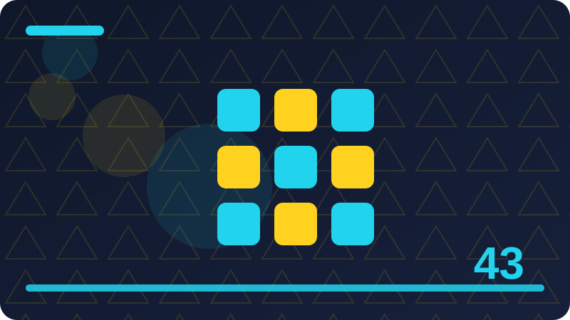

Chapter 43: iOS Basics in Plain Words

Section 1: What an iOS App Is Made Of
In plain words, what an ios app is made of is one of those ideas that sounds technical until you see what it does in everyday life. Imagine you have a job to do, and you need a reliable way to handle it without guessing or losing track. That is the heart of this section. You do not need to memorise a definition word for word. You need a clear picture you can return to when you meet the idea again in real code. Keep that picture in mind as you read on, because every example below is just that picture made concrete.
Why does what an ios app is made of matter for a beginner? Because it shows up again and again, in small programs and in large ones, and the programs that handle it well feel calm and trustworthy to use. When you understand it, you can explain your code to another person without hand-waving. You can also spot when something is missing, instead of staring at an error and hoping it goes away. That confidence is worth more than speed. Slow, clear understanding now saves many confused hours later, and it makes the next chapter easier too.
Let us walk through what an ios app is made of step by step, in the order you would actually meet it. First, you name the thing you are working with, in words a teammate would recognise. Second, you decide what should happen in the normal case, when everything goes as expected. Third, you decide what should happen when it does not, because real programs meet messy input, missing data and tired users. Fourth, you write the smallest code that covers both cases. Fifth, you run it, read the result, and fix only what the result shows is wrong.
let title = "What an iOS App Is Made Of"
print(title)
print("Section 1: working through this idea step by step.")The code below shows what an ios app is made of in a small, complete shape you can run and change. Read it slowly, one line at a time, and ask what each line is for. The first lines set up the values you need, so there is nothing mysterious later. The middle lines do the actual work, in the same order you would explain it out loud. The last lines show the result, so you can check your understanding at a glance. If a line puzzles you, change one small part, run it again, and watch what changes. That experiment teaches more than rereading.
Beginners often trip over what an ios app is made of in a few predictable ways, and knowing them in advance helps you avoid them. One common mistake is trying to do everything at once, which makes errors hard to find. Another is copying code without checking what each value means, which works until the data changes. A third is ignoring the unhappy path, the case where input is missing or wrong, and then being surprised when it happens. The fix is always the same: start small, name things clearly, test the normal case first, then test one difficult case.
Check: In your own words, what does what an ios app is made of mean, and when would you use it in a small Swift program?
Section 2: The App Life Cycle in Plain Words
In plain words, the app life cycle in plain words is one of those ideas that sounds technical until you see what it does in everyday life. Imagine you have a job to do, and you need a reliable way to handle it without guessing or losing track. That is the heart of this section. You do not need to memorise a definition word for word. You need a clear picture you can return to when you meet the idea again in real code. Keep that picture in mind as you read on, because every example below is just that picture made concrete.
Why does the app life cycle in plain words matter for a beginner? Because it shows up again and again, in small programs and in large ones, and the programs that handle it well feel calm and trustworthy to use. When you understand it, you can explain your code to another person without hand-waving. You can also spot when something is missing, instead of staring at an error and hoping it goes away. That confidence is worth more than speed. Slow, clear understanding now saves many confused hours later, and it makes the next chapter easier too.
Let us walk through the app life cycle in plain words step by step, in the order you would actually meet it. First, you name the thing you are working with, in words a teammate would recognise. Second, you decide what should happen in the normal case, when everything goes as expected. Third, you decide what should happen when it does not, because real programs meet messy input, missing data and tired users. Fourth, you write the smallest code that covers both cases. Fifth, you run it, read the result, and fix only what the result shows is wrong.
struct Example {
let name: String
var count: Int = 0
mutating func record() {
count += 1
}
}
var item = Example(name: "The App Life Cycle in Plain Words")
item.record()
print(item.count)The code below shows the app life cycle in plain words in a small, complete shape you can run and change. Read it slowly, one line at a time, and ask what each line is for. The first lines set up the values you need, so there is nothing mysterious later. The middle lines do the actual work, in the same order you would explain it out loud. The last lines show the result, so you can check your understanding at a glance. If a line puzzles you, change one small part, run it again, and watch what changes. That experiment teaches more than rereading.
Beginners often trip over the app life cycle in plain words in a few predictable ways, and knowing them in advance helps you avoid them. One common mistake is trying to do everything at once, which makes errors hard to find. Another is copying code without checking what each value means, which works until the data changes. A third is ignoring the unhappy path, the case where input is missing or wrong, and then being surprised when it happens. The fix is always the same: start small, name things clearly, test the normal case first, then test one difficult case.
Check: In your own words, what does the app life cycle in plain words mean, and when would you use it in a small Swift program?
Section 3: Views: Everything You See
In plain words, views: everything you see is one of those ideas that sounds technical until you see what it does in everyday life. Imagine you have a job to do, and you need a reliable way to handle it without guessing or losing track. That is the heart of this section. You do not need to memorise a definition word for word. You need a clear picture you can return to when you meet the idea again in real code. Keep that picture in mind as you read on, because every example below is just that picture made concrete.
Why does views: everything you see matter for a beginner? Because it shows up again and again, in small programs and in large ones, and the programs that handle it well feel calm and trustworthy to use. When you understand it, you can explain your code to another person without hand-waving. You can also spot when something is missing, instead of staring at an error and hoping it goes away. That confidence is worth more than speed. Slow, clear understanding now saves many confused hours later, and it makes the next chapter easier too.
Let us walk through views: everything you see step by step, in the order you would actually meet it. First, you name the thing you are working with, in words a teammate would recognise. Second, you decide what should happen in the normal case, when everything goes as expected. Third, you decide what should happen when it does not, because real programs meet messy input, missing data and tired users. Fourth, you write the smallest code that covers both cases. Fifth, you run it, read the result, and fix only what the result shows is wrong.
func describe(_ value: String) -> String {
return "Working with: \(value)"
}
print(describe("Views: Everything You See"))The code below shows views: everything you see in a small, complete shape you can run and change. Read it slowly, one line at a time, and ask what each line is for. The first lines set up the values you need, so there is nothing mysterious later. The middle lines do the actual work, in the same order you would explain it out loud. The last lines show the result, so you can check your understanding at a glance. If a line puzzles you, change one small part, run it again, and watch what changes. That experiment teaches more than rereading.
Beginners often trip over views: everything you see in a few predictable ways, and knowing them in advance helps you avoid them. One common mistake is trying to do everything at once, which makes errors hard to find. Another is copying code without checking what each value means, which works until the data changes. A third is ignoring the unhappy path, the case where input is missing or wrong, and then being surprised when it happens. The fix is always the same: start small, name things clearly, test the normal case first, then test one difficult case.
Check: In your own words, what does views: everything you see mean, and when would you use it in a small Swift program?
Section 4: View Controllers and Screens
In plain words, view controllers and screens is one of those ideas that sounds technical until you see what it does in everyday life. Imagine you have a job to do, and you need a reliable way to handle it without guessing or losing track. That is the heart of this section. You do not need to memorise a definition word for word. You need a clear picture you can return to when you meet the idea again in real code. Keep that picture in mind as you read on, because every example below is just that picture made concrete.
Why does view controllers and screens matter for a beginner? Because it shows up again and again, in small programs and in large ones, and the programs that handle it well feel calm and trustworthy to use. When you understand it, you can explain your code to another person without hand-waving. You can also spot when something is missing, instead of staring at an error and hoping it goes away. That confidence is worth more than speed. Slow, clear understanding now saves many confused hours later, and it makes the next chapter easier too.
Let us walk through view controllers and screens step by step, in the order you would actually meet it. First, you name the thing you are working with, in words a teammate would recognise. Second, you decide what should happen in the normal case, when everything goes as expected. Third, you decide what should happen when it does not, because real programs meet messy input, missing data and tired users. Fourth, you write the smallest code that covers both cases. Fifth, you run it, read the result, and fix only what the result shows is wrong.
let items = ["first", "second", "third"]
for item in items {
print("\(item): View Controllers and Screens")
}
print("Done: \(items.count) items.")The code below shows view controllers and screens in a small, complete shape you can run and change. Read it slowly, one line at a time, and ask what each line is for. The first lines set up the values you need, so there is nothing mysterious later. The middle lines do the actual work, in the same order you would explain it out loud. The last lines show the result, so you can check your understanding at a glance. If a line puzzles you, change one small part, run it again, and watch what changes. That experiment teaches more than rereading.
Beginners often trip over view controllers and screens in a few predictable ways, and knowing them in advance helps you avoid them. One common mistake is trying to do everything at once, which makes errors hard to find. Another is copying code without checking what each value means, which works until the data changes. A third is ignoring the unhappy path, the case where input is missing or wrong, and then being surprised when it happens. The fix is always the same: start small, name things clearly, test the normal case first, then test one difficult case.
Check: In your own words, what does view controllers and screens mean, and when would you use it in a small Swift program?
Section 5: SwiftUI Views in Plain Words
In plain words, swiftui views in plain words is one of those ideas that sounds technical until you see what it does in everyday life. Imagine you have a job to do, and you need a reliable way to handle it without guessing or losing track. That is the heart of this section. You do not need to memorise a definition word for word. You need a clear picture you can return to when you meet the idea again in real code. Keep that picture in mind as you read on, because every example below is just that picture made concrete.
Why does swiftui views in plain words matter for a beginner? Because it shows up again and again, in small programs and in large ones, and the programs that handle it well feel calm and trustworthy to use. When you understand it, you can explain your code to another person without hand-waving. You can also spot when something is missing, instead of staring at an error and hoping it goes away. That confidence is worth more than speed. Slow, clear understanding now saves many confused hours later, and it makes the next chapter easier too.
Let us walk through swiftui views in plain words step by step, in the order you would actually meet it. First, you name the thing you are working with, in words a teammate would recognise. Second, you decide what should happen in the normal case, when everything goes as expected. Third, you decide what should happen when it does not, because real programs meet messy input, missing data and tired users. Fourth, you write the smallest code that covers both cases. Fifth, you run it, read the result, and fix only what the result shows is wrong.
enum Outcome {
case success(String)
case failure(String)
}
let result = Outcome.success("SwiftUI Views in Plain Words")
switch result {
case .success(let message): print(message)
case .failure(let problem): print("Problem: \(problem)")
}The code below shows swiftui views in plain words in a small, complete shape you can run and change. Read it slowly, one line at a time, and ask what each line is for. The first lines set up the values you need, so there is nothing mysterious later. The middle lines do the actual work, in the same order you would explain it out loud. The last lines show the result, so you can check your understanding at a glance. If a line puzzles you, change one small part, run it again, and watch what changes. That experiment teaches more than rereading.
Beginners often trip over swiftui views in plain words in a few predictable ways, and knowing them in advance helps you avoid them. One common mistake is trying to do everything at once, which makes errors hard to find. Another is copying code without checking what each value means, which works until the data changes. A third is ignoring the unhappy path, the case where input is missing or wrong, and then being surprised when it happens. The fix is always the same: start small, name things clearly, test the normal case first, then test one difficult case.
Check: In your own words, what does swiftui views in plain words mean, and when would you use it in a small Swift program?
Section 6: State: Data That Changes the Screen
In plain words, state: data that changes the screen is one of those ideas that sounds technical until you see what it does in everyday life. Imagine you have a job to do, and you need a reliable way to handle it without guessing or losing track. That is the heart of this section. You do not need to memorise a definition word for word. You need a clear picture you can return to when you meet the idea again in real code. Keep that picture in mind as you read on, because every example below is just that picture made concrete.
Why does state: data that changes the screen matter for a beginner? Because it shows up again and again, in small programs and in large ones, and the programs that handle it well feel calm and trustworthy to use. When you understand it, you can explain your code to another person without hand-waving. You can also spot when something is missing, instead of staring at an error and hoping it goes away. That confidence is worth more than speed. Slow, clear understanding now saves many confused hours later, and it makes the next chapter easier too.
Let us walk through state: data that changes the screen step by step, in the order you would actually meet it. First, you name the thing you are working with, in words a teammate would recognise. Second, you decide what should happen in the normal case, when everything goes as expected. Third, you decide what should happen when it does not, because real programs meet messy input, missing data and tired users. Fourth, you write the smallest code that covers both cases. Fifth, you run it, read the result, and fix only what the result shows is wrong.
func run() async throws -> String {
return "Ready: State: Data That Changes the Screen"
}
Task {
do {
print(try await run())
} catch {
print("Could not finish: \(error)")
}
}The code below shows state: data that changes the screen in a small, complete shape you can run and change. Read it slowly, one line at a time, and ask what each line is for. The first lines set up the values you need, so there is nothing mysterious later. The middle lines do the actual work, in the same order you would explain it out loud. The last lines show the result, so you can check your understanding at a glance. If a line puzzles you, change one small part, run it again, and watch what changes. That experiment teaches more than rereading.
Beginners often trip over state: data that changes the screen in a few predictable ways, and knowing them in advance helps you avoid them. One common mistake is trying to do everything at once, which makes errors hard to find. Another is copying code without checking what each value means, which works until the data changes. A third is ignoring the unhappy path, the case where input is missing or wrong, and then being surprised when it happens. The fix is always the same: start small, name things clearly, test the normal case first, then test one difficult case.
Check: In your own words, what does state: data that changes the screen mean, and when would you use it in a small Swift program?
Section 7: Buttons, Text and Images
In plain words, buttons, text and images is one of those ideas that sounds technical until you see what it does in everyday life. Imagine you have a job to do, and you need a reliable way to handle it without guessing or losing track. That is the heart of this section. You do not need to memorise a definition word for word. You need a clear picture you can return to when you meet the idea again in real code. Keep that picture in mind as you read on, because every example below is just that picture made concrete.
Why does buttons, text and images matter for a beginner? Because it shows up again and again, in small programs and in large ones, and the programs that handle it well feel calm and trustworthy to use. When you understand it, you can explain your code to another person without hand-waving. You can also spot when something is missing, instead of staring at an error and hoping it goes away. That confidence is worth more than speed. Slow, clear understanding now saves many confused hours later, and it makes the next chapter easier too.
Let us walk through buttons, text and images step by step, in the order you would actually meet it. First, you name the thing you are working with, in words a teammate would recognise. Second, you decide what should happen in the normal case, when everything goes as expected. Third, you decide what should happen when it does not, because real programs meet messy input, missing data and tired users. Fourth, you write the smallest code that covers both cases. Fifth, you run it, read the result, and fix only what the result shows is wrong.
let title = "Buttons, Text and Images"
print(title)
print("Section 7: working through this idea step by step.")The code below shows buttons, text and images in a small, complete shape you can run and change. Read it slowly, one line at a time, and ask what each line is for. The first lines set up the values you need, so there is nothing mysterious later. The middle lines do the actual work, in the same order you would explain it out loud. The last lines show the result, so you can check your understanding at a glance. If a line puzzles you, change one small part, run it again, and watch what changes. That experiment teaches more than rereading.
Beginners often trip over buttons, text and images in a few predictable ways, and knowing them in advance helps you avoid them. One common mistake is trying to do everything at once, which makes errors hard to find. Another is copying code without checking what each value means, which works until the data changes. A third is ignoring the unhappy path, the case where input is missing or wrong, and then being surprised when it happens. The fix is always the same: start small, name things clearly, test the normal case first, then test one difficult case.
Check: In your own words, what does buttons, text and images mean, and when would you use it in a small Swift program?
Section 8: Text Fields and User Input
In plain words, text fields and user input is one of those ideas that sounds technical until you see what it does in everyday life. Imagine you have a job to do, and you need a reliable way to handle it without guessing or losing track. That is the heart of this section. You do not need to memorise a definition word for word. You need a clear picture you can return to when you meet the idea again in real code. Keep that picture in mind as you read on, because every example below is just that picture made concrete.
Why does text fields and user input matter for a beginner? Because it shows up again and again, in small programs and in large ones, and the programs that handle it well feel calm and trustworthy to use. When you understand it, you can explain your code to another person without hand-waving. You can also spot when something is missing, instead of staring at an error and hoping it goes away. That confidence is worth more than speed. Slow, clear understanding now saves many confused hours later, and it makes the next chapter easier too.
Let us walk through text fields and user input step by step, in the order you would actually meet it. First, you name the thing you are working with, in words a teammate would recognise. Second, you decide what should happen in the normal case, when everything goes as expected. Third, you decide what should happen when it does not, because real programs meet messy input, missing data and tired users. Fourth, you write the smallest code that covers both cases. Fifth, you run it, read the result, and fix only what the result shows is wrong.
struct Example {
let name: String
var count: Int = 0
mutating func record() {
count += 1
}
}
var item = Example(name: "Text Fields and User Input")
item.record()
print(item.count)The code below shows text fields and user input in a small, complete shape you can run and change. Read it slowly, one line at a time, and ask what each line is for. The first lines set up the values you need, so there is nothing mysterious later. The middle lines do the actual work, in the same order you would explain it out loud. The last lines show the result, so you can check your understanding at a glance. If a line puzzles you, change one small part, run it again, and watch what changes. That experiment teaches more than rereading.
Beginners often trip over text fields and user input in a few predictable ways, and knowing them in advance helps you avoid them. One common mistake is trying to do everything at once, which makes errors hard to find. Another is copying code without checking what each value means, which works until the data changes. A third is ignoring the unhappy path, the case where input is missing or wrong, and then being surprised when it happens. The fix is always the same: start small, name things clearly, test the normal case first, then test one difficult case.
Check: In your own words, what does text fields and user input mean, and when would you use it in a small Swift program?
Section 9: Lists and Rows
In plain words, lists and rows is one of those ideas that sounds technical until you see what it does in everyday life. Imagine you have a job to do, and you need a reliable way to handle it without guessing or losing track. That is the heart of this section. You do not need to memorise a definition word for word. You need a clear picture you can return to when you meet the idea again in real code. Keep that picture in mind as you read on, because every example below is just that picture made concrete.
Why does lists and rows matter for a beginner? Because it shows up again and again, in small programs and in large ones, and the programs that handle it well feel calm and trustworthy to use. When you understand it, you can explain your code to another person without hand-waving. You can also spot when something is missing, instead of staring at an error and hoping it goes away. That confidence is worth more than speed. Slow, clear understanding now saves many confused hours later, and it makes the next chapter easier too.
Let us walk through lists and rows step by step, in the order you would actually meet it. First, you name the thing you are working with, in words a teammate would recognise. Second, you decide what should happen in the normal case, when everything goes as expected. Third, you decide what should happen when it does not, because real programs meet messy input, missing data and tired users. Fourth, you write the smallest code that covers both cases. Fifth, you run it, read the result, and fix only what the result shows is wrong.
func describe(_ value: String) -> String {
return "Working with: \(value)"
}
print(describe("Lists and Rows"))The code below shows lists and rows in a small, complete shape you can run and change. Read it slowly, one line at a time, and ask what each line is for. The first lines set up the values you need, so there is nothing mysterious later. The middle lines do the actual work, in the same order you would explain it out loud. The last lines show the result, so you can check your understanding at a glance. If a line puzzles you, change one small part, run it again, and watch what changes. That experiment teaches more than rereading.
Beginners often trip over lists and rows in a few predictable ways, and knowing them in advance helps you avoid them. One common mistake is trying to do everything at once, which makes errors hard to find. Another is copying code without checking what each value means, which works until the data changes. A third is ignoring the unhappy path, the case where input is missing or wrong, and then being surprised when it happens. The fix is always the same: start small, name things clearly, test the normal case first, then test one difficult case.
Check: In your own words, what does lists and rows mean, and when would you use it in a small Swift program?
Section 10: Navigation Between Screens
In plain words, navigation between screens is one of those ideas that sounds technical until you see what it does in everyday life. Imagine you have a job to do, and you need a reliable way to handle it without guessing or losing track. That is the heart of this section. You do not need to memorise a definition word for word. You need a clear picture you can return to when you meet the idea again in real code. Keep that picture in mind as you read on, because every example below is just that picture made concrete.
Why does navigation between screens matter for a beginner? Because it shows up again and again, in small programs and in large ones, and the programs that handle it well feel calm and trustworthy to use. When you understand it, you can explain your code to another person without hand-waving. You can also spot when something is missing, instead of staring at an error and hoping it goes away. That confidence is worth more than speed. Slow, clear understanding now saves many confused hours later, and it makes the next chapter easier too.
Let us walk through navigation between screens step by step, in the order you would actually meet it. First, you name the thing you are working with, in words a teammate would recognise. Second, you decide what should happen in the normal case, when everything goes as expected. Third, you decide what should happen when it does not, because real programs meet messy input, missing data and tired users. Fourth, you write the smallest code that covers both cases. Fifth, you run it, read the result, and fix only what the result shows is wrong.
let items = ["first", "second", "third"]
for item in items {
print("\(item): Navigation Between Screens")
}
print("Done: \(items.count) items.")The code below shows navigation between screens in a small, complete shape you can run and change. Read it slowly, one line at a time, and ask what each line is for. The first lines set up the values you need, so there is nothing mysterious later. The middle lines do the actual work, in the same order you would explain it out loud. The last lines show the result, so you can check your understanding at a glance. If a line puzzles you, change one small part, run it again, and watch what changes. That experiment teaches more than rereading.
Beginners often trip over navigation between screens in a few predictable ways, and knowing them in advance helps you avoid them. One common mistake is trying to do everything at once, which makes errors hard to find. Another is copying code without checking what each value means, which works until the data changes. A third is ignoring the unhappy path, the case where input is missing or wrong, and then being surprised when it happens. The fix is always the same: start small, name things clearly, test the normal case first, then test one difficult case.
Check: In your own words, what does navigation between screens mean, and when would you use it in a small Swift program?
Section 11: Tab Bars for Main Sections
In plain words, tab bars for main sections is one of those ideas that sounds technical until you see what it does in everyday life. Imagine you have a job to do, and you need a reliable way to handle it without guessing or losing track. That is the heart of this section. You do not need to memorise a definition word for word. You need a clear picture you can return to when you meet the idea again in real code. Keep that picture in mind as you read on, because every example below is just that picture made concrete.
Why does tab bars for main sections matter for a beginner? Because it shows up again and again, in small programs and in large ones, and the programs that handle it well feel calm and trustworthy to use. When you understand it, you can explain your code to another person without hand-waving. You can also spot when something is missing, instead of staring at an error and hoping it goes away. That confidence is worth more than speed. Slow, clear understanding now saves many confused hours later, and it makes the next chapter easier too.
Let us walk through tab bars for main sections step by step, in the order you would actually meet it. First, you name the thing you are working with, in words a teammate would recognise. Second, you decide what should happen in the normal case, when everything goes as expected. Third, you decide what should happen when it does not, because real programs meet messy input, missing data and tired users. Fourth, you write the smallest code that covers both cases. Fifth, you run it, read the result, and fix only what the result shows is wrong.
enum Outcome {
case success(String)
case failure(String)
}
let result = Outcome.success("Tab Bars for Main Sections")
switch result {
case .success(let message): print(message)
case .failure(let problem): print("Problem: \(problem)")
}The code below shows tab bars for main sections in a small, complete shape you can run and change. Read it slowly, one line at a time, and ask what each line is for. The first lines set up the values you need, so there is nothing mysterious later. The middle lines do the actual work, in the same order you would explain it out loud. The last lines show the result, so you can check your understanding at a glance. If a line puzzles you, change one small part, run it again, and watch what changes. That experiment teaches more than rereading.
Beginners often trip over tab bars for main sections in a few predictable ways, and knowing them in advance helps you avoid them. One common mistake is trying to do everything at once, which makes errors hard to find. Another is copying code without checking what each value means, which works until the data changes. A third is ignoring the unhappy path, the case where input is missing or wrong, and then being surprised when it happens. The fix is always the same: start small, name things clearly, test the normal case first, then test one difficult case.
Check: In your own words, what does tab bars for main sections mean, and when would you use it in a small Swift program?
Section 12: Presenting a Sheet or Alert
In plain words, presenting a sheet or alert is one of those ideas that sounds technical until you see what it does in everyday life. Imagine you have a job to do, and you need a reliable way to handle it without guessing or losing track. That is the heart of this section. You do not need to memorise a definition word for word. You need a clear picture you can return to when you meet the idea again in real code. Keep that picture in mind as you read on, because every example below is just that picture made concrete.
Why does presenting a sheet or alert matter for a beginner? Because it shows up again and again, in small programs and in large ones, and the programs that handle it well feel calm and trustworthy to use. When you understand it, you can explain your code to another person without hand-waving. You can also spot when something is missing, instead of staring at an error and hoping it goes away. That confidence is worth more than speed. Slow, clear understanding now saves many confused hours later, and it makes the next chapter easier too.
Let us walk through presenting a sheet or alert step by step, in the order you would actually meet it. First, you name the thing you are working with, in words a teammate would recognise. Second, you decide what should happen in the normal case, when everything goes as expected. Third, you decide what should happen when it does not, because real programs meet messy input, missing data and tired users. Fourth, you write the smallest code that covers both cases. Fifth, you run it, read the result, and fix only what the result shows is wrong.
func run() async throws -> String {
return "Ready: Presenting a Sheet or Alert"
}
Task {
do {
print(try await run())
} catch {
print("Could not finish: \(error)")
}
}The code below shows presenting a sheet or alert in a small, complete shape you can run and change. Read it slowly, one line at a time, and ask what each line is for. The first lines set up the values you need, so there is nothing mysterious later. The middle lines do the actual work, in the same order you would explain it out loud. The last lines show the result, so you can check your understanding at a glance. If a line puzzles you, change one small part, run it again, and watch what changes. That experiment teaches more than rereading.
Beginners often trip over presenting a sheet or alert in a few predictable ways, and knowing them in advance helps you avoid them. One common mistake is trying to do everything at once, which makes errors hard to find. Another is copying code without checking what each value means, which works until the data changes. A third is ignoring the unhappy path, the case where input is missing or wrong, and then being surprised when it happens. The fix is always the same: start small, name things clearly, test the normal case first, then test one difficult case.
Check: In your own words, what does presenting a sheet or alert mean, and when would you use it in a small Swift program?
Section 13: Layout: Stacks and Spacing
In plain words, layout: stacks and spacing is one of those ideas that sounds technical until you see what it does in everyday life. Imagine you have a job to do, and you need a reliable way to handle it without guessing or losing track. That is the heart of this section. You do not need to memorise a definition word for word. You need a clear picture you can return to when you meet the idea again in real code. Keep that picture in mind as you read on, because every example below is just that picture made concrete.
Why does layout: stacks and spacing matter for a beginner? Because it shows up again and again, in small programs and in large ones, and the programs that handle it well feel calm and trustworthy to use. When you understand it, you can explain your code to another person without hand-waving. You can also spot when something is missing, instead of staring at an error and hoping it goes away. That confidence is worth more than speed. Slow, clear understanding now saves many confused hours later, and it makes the next chapter easier too.
Let us walk through layout: stacks and spacing step by step, in the order you would actually meet it. First, you name the thing you are working with, in words a teammate would recognise. Second, you decide what should happen in the normal case, when everything goes as expected. Third, you decide what should happen when it does not, because real programs meet messy input, missing data and tired users. Fourth, you write the smallest code that covers both cases. Fifth, you run it, read the result, and fix only what the result shows is wrong.
let title = "Layout: Stacks and Spacing"
print(title)
print("Section 13: working through this idea step by step.")The code below shows layout: stacks and spacing in a small, complete shape you can run and change. Read it slowly, one line at a time, and ask what each line is for. The first lines set up the values you need, so there is nothing mysterious later. The middle lines do the actual work, in the same order you would explain it out loud. The last lines show the result, so you can check your understanding at a glance. If a line puzzles you, change one small part, run it again, and watch what changes. That experiment teaches more than rereading.
Beginners often trip over layout: stacks and spacing in a few predictable ways, and knowing them in advance helps you avoid them. One common mistake is trying to do everything at once, which makes errors hard to find. Another is copying code without checking what each value means, which works until the data changes. A third is ignoring the unhappy path, the case where input is missing or wrong, and then being surprised when it happens. The fix is always the same: start small, name things clearly, test the normal case first, then test one difficult case.
Check: In your own words, what does layout: stacks and spacing mean, and when would you use it in a small Swift program?
Section 14: Safe Areas and Different Phones
In plain words, safe areas and different phones is one of those ideas that sounds technical until you see what it does in everyday life. Imagine you have a job to do, and you need a reliable way to handle it without guessing or losing track. That is the heart of this section. You do not need to memorise a definition word for word. You need a clear picture you can return to when you meet the idea again in real code. Keep that picture in mind as you read on, because every example below is just that picture made concrete.
Why does safe areas and different phones matter for a beginner? Because it shows up again and again, in small programs and in large ones, and the programs that handle it well feel calm and trustworthy to use. When you understand it, you can explain your code to another person without hand-waving. You can also spot when something is missing, instead of staring at an error and hoping it goes away. That confidence is worth more than speed. Slow, clear understanding now saves many confused hours later, and it makes the next chapter easier too.
Let us walk through safe areas and different phones step by step, in the order you would actually meet it. First, you name the thing you are working with, in words a teammate would recognise. Second, you decide what should happen in the normal case, when everything goes as expected. Third, you decide what should happen when it does not, because real programs meet messy input, missing data and tired users. Fourth, you write the smallest code that covers both cases. Fifth, you run it, read the result, and fix only what the result shows is wrong.
struct Example {
let name: String
var count: Int = 0
mutating func record() {
count += 1
}
}
var item = Example(name: "Safe Areas and Different Phones")
item.record()
print(item.count)The code below shows safe areas and different phones in a small, complete shape you can run and change. Read it slowly, one line at a time, and ask what each line is for. The first lines set up the values you need, so there is nothing mysterious later. The middle lines do the actual work, in the same order you would explain it out loud. The last lines show the result, so you can check your understanding at a glance. If a line puzzles you, change one small part, run it again, and watch what changes. That experiment teaches more than rereading.
Beginners often trip over safe areas and different phones in a few predictable ways, and knowing them in advance helps you avoid them. One common mistake is trying to do everything at once, which makes errors hard to find. Another is copying code without checking what each value means, which works until the data changes. A third is ignoring the unhappy path, the case where input is missing or wrong, and then being surprised when it happens. The fix is always the same: start small, name things clearly, test the normal case first, then test one difficult case.
Check: In your own words, what does safe areas and different phones mean, and when would you use it in a small Swift program?
Section 15: Colours, Fonts and Readable Text
In plain words, colours, fonts and readable text is one of those ideas that sounds technical until you see what it does in everyday life. Imagine you have a job to do, and you need a reliable way to handle it without guessing or losing track. That is the heart of this section. You do not need to memorise a definition word for word. You need a clear picture you can return to when you meet the idea again in real code. Keep that picture in mind as you read on, because every example below is just that picture made concrete.
Why does colours, fonts and readable text matter for a beginner? Because it shows up again and again, in small programs and in large ones, and the programs that handle it well feel calm and trustworthy to use. When you understand it, you can explain your code to another person without hand-waving. You can also spot when something is missing, instead of staring at an error and hoping it goes away. That confidence is worth more than speed. Slow, clear understanding now saves many confused hours later, and it makes the next chapter easier too.
Let us walk through colours, fonts and readable text step by step, in the order you would actually meet it. First, you name the thing you are working with, in words a teammate would recognise. Second, you decide what should happen in the normal case, when everything goes as expected. Third, you decide what should happen when it does not, because real programs meet messy input, missing data and tired users. Fourth, you write the smallest code that covers both cases. Fifth, you run it, read the result, and fix only what the result shows is wrong.
func describe(_ value: String) -> String {
return "Working with: \(value)"
}
print(describe("Colours, Fonts and Readable Text"))The code below shows colours, fonts and readable text in a small, complete shape you can run and change. Read it slowly, one line at a time, and ask what each line is for. The first lines set up the values you need, so there is nothing mysterious later. The middle lines do the actual work, in the same order you would explain it out loud. The last lines show the result, so you can check your understanding at a glance. If a line puzzles you, change one small part, run it again, and watch what changes. That experiment teaches more than rereading.
Beginners often trip over colours, fonts and readable text in a few predictable ways, and knowing them in advance helps you avoid them. One common mistake is trying to do everything at once, which makes errors hard to find. Another is copying code without checking what each value means, which works until the data changes. A third is ignoring the unhappy path, the case where input is missing or wrong, and then being surprised when it happens. The fix is always the same: start small, name things clearly, test the normal case first, then test one difficult case.
Check: In your own words, what does colours, fonts and readable text mean, and when would you use it in a small Swift program?
Section 16: Handling Taps and Gestures
In plain words, handling taps and gestures is one of those ideas that sounds technical until you see what it does in everyday life. Imagine you have a job to do, and you need a reliable way to handle it without guessing or losing track. That is the heart of this section. You do not need to memorise a definition word for word. You need a clear picture you can return to when you meet the idea again in real code. Keep that picture in mind as you read on, because every example below is just that picture made concrete.
Why does handling taps and gestures matter for a beginner? Because it shows up again and again, in small programs and in large ones, and the programs that handle it well feel calm and trustworthy to use. When you understand it, you can explain your code to another person without hand-waving. You can also spot when something is missing, instead of staring at an error and hoping it goes away. That confidence is worth more than speed. Slow, clear understanding now saves many confused hours later, and it makes the next chapter easier too.
Let us walk through handling taps and gestures step by step, in the order you would actually meet it. First, you name the thing you are working with, in words a teammate would recognise. Second, you decide what should happen in the normal case, when everything goes as expected. Third, you decide what should happen when it does not, because real programs meet messy input, missing data and tired users. Fourth, you write the smallest code that covers both cases. Fifth, you run it, read the result, and fix only what the result shows is wrong.
let items = ["first", "second", "third"]
for item in items {
print("\(item): Handling Taps and Gestures")
}
print("Done: \(items.count) items.")The code below shows handling taps and gestures in a small, complete shape you can run and change. Read it slowly, one line at a time, and ask what each line is for. The first lines set up the values you need, so there is nothing mysterious later. The middle lines do the actual work, in the same order you would explain it out loud. The last lines show the result, so you can check your understanding at a glance. If a line puzzles you, change one small part, run it again, and watch what changes. That experiment teaches more than rereading.
Beginners often trip over handling taps and gestures in a few predictable ways, and knowing them in advance helps you avoid them. One common mistake is trying to do everything at once, which makes errors hard to find. Another is copying code without checking what each value means, which works until the data changes. A third is ignoring the unhappy path, the case where input is missing or wrong, and then being surprised when it happens. The fix is always the same: start small, name things clearly, test the normal case first, then test one difficult case.
Check: In your own words, what does handling taps and gestures mean, and when would you use it in a small Swift program?
Section 17: Keyboards and Dismissing Them
In plain words, keyboards and dismissing them is one of those ideas that sounds technical until you see what it does in everyday life. Imagine you have a job to do, and you need a reliable way to handle it without guessing or losing track. That is the heart of this section. You do not need to memorise a definition word for word. You need a clear picture you can return to when you meet the idea again in real code. Keep that picture in mind as you read on, because every example below is just that picture made concrete.
Why does keyboards and dismissing them matter for a beginner? Because it shows up again and again, in small programs and in large ones, and the programs that handle it well feel calm and trustworthy to use. When you understand it, you can explain your code to another person without hand-waving. You can also spot when something is missing, instead of staring at an error and hoping it goes away. That confidence is worth more than speed. Slow, clear understanding now saves many confused hours later, and it makes the next chapter easier too.
Let us walk through keyboards and dismissing them step by step, in the order you would actually meet it. First, you name the thing you are working with, in words a teammate would recognise. Second, you decide what should happen in the normal case, when everything goes as expected. Third, you decide what should happen when it does not, because real programs meet messy input, missing data and tired users. Fourth, you write the smallest code that covers both cases. Fifth, you run it, read the result, and fix only what the result shows is wrong.
enum Outcome {
case success(String)
case failure(String)
}
let result = Outcome.success("Keyboards and Dismissing Them")
switch result {
case .success(let message): print(message)
case .failure(let problem): print("Problem: \(problem)")
}The code below shows keyboards and dismissing them in a small, complete shape you can run and change. Read it slowly, one line at a time, and ask what each line is for. The first lines set up the values you need, so there is nothing mysterious later. The middle lines do the actual work, in the same order you would explain it out loud. The last lines show the result, so you can check your understanding at a glance. If a line puzzles you, change one small part, run it again, and watch what changes. That experiment teaches more than rereading.
Beginners often trip over keyboards and dismissing them in a few predictable ways, and knowing them in advance helps you avoid them. One common mistake is trying to do everything at once, which makes errors hard to find. Another is copying code without checking what each value means, which works until the data changes. A third is ignoring the unhappy path, the case where input is missing or wrong, and then being surprised when it happens. The fix is always the same: start small, name things clearly, test the normal case first, then test one difficult case.
Check: In your own words, what does keyboards and dismissing them mean, and when would you use it in a small Swift program?
Section 18: Saving a Simple Setting
In plain words, saving a simple setting is one of those ideas that sounds technical until you see what it does in everyday life. Imagine you have a job to do, and you need a reliable way to handle it without guessing or losing track. That is the heart of this section. You do not need to memorise a definition word for word. You need a clear picture you can return to when you meet the idea again in real code. Keep that picture in mind as you read on, because every example below is just that picture made concrete.
Why does saving a simple setting matter for a beginner? Because it shows up again and again, in small programs and in large ones, and the programs that handle it well feel calm and trustworthy to use. When you understand it, you can explain your code to another person without hand-waving. You can also spot when something is missing, instead of staring at an error and hoping it goes away. That confidence is worth more than speed. Slow, clear understanding now saves many confused hours later, and it makes the next chapter easier too.
Let us walk through saving a simple setting step by step, in the order you would actually meet it. First, you name the thing you are working with, in words a teammate would recognise. Second, you decide what should happen in the normal case, when everything goes as expected. Third, you decide what should happen when it does not, because real programs meet messy input, missing data and tired users. Fourth, you write the smallest code that covers both cases. Fifth, you run it, read the result, and fix only what the result shows is wrong.
func run() async throws -> String {
return "Ready: Saving a Simple Setting"
}
Task {
do {
print(try await run())
} catch {
print("Could not finish: \(error)")
}
}The code below shows saving a simple setting in a small, complete shape you can run and change. Read it slowly, one line at a time, and ask what each line is for. The first lines set up the values you need, so there is nothing mysterious later. The middle lines do the actual work, in the same order you would explain it out loud. The last lines show the result, so you can check your understanding at a glance. If a line puzzles you, change one small part, run it again, and watch what changes. That experiment teaches more than rereading.
Beginners often trip over saving a simple setting in a few predictable ways, and knowing them in advance helps you avoid them. One common mistake is trying to do everything at once, which makes errors hard to find. Another is copying code without checking what each value means, which works until the data changes. A third is ignoring the unhappy path, the case where input is missing or wrong, and then being surprised when it happens. The fix is always the same: start small, name things clearly, test the normal case first, then test one difficult case.
Check: In your own words, what does saving a simple setting mean, and when would you use it in a small Swift program?
Section 19: Loading Data When a Screen Appears
In plain words, loading data when a screen appears is one of those ideas that sounds technical until you see what it does in everyday life. Imagine you have a job to do, and you need a reliable way to handle it without guessing or losing track. That is the heart of this section. You do not need to memorise a definition word for word. You need a clear picture you can return to when you meet the idea again in real code. Keep that picture in mind as you read on, because every example below is just that picture made concrete.
Why does loading data when a screen appears matter for a beginner? Because it shows up again and again, in small programs and in large ones, and the programs that handle it well feel calm and trustworthy to use. When you understand it, you can explain your code to another person without hand-waving. You can also spot when something is missing, instead of staring at an error and hoping it goes away. That confidence is worth more than speed. Slow, clear understanding now saves many confused hours later, and it makes the next chapter easier too.
Let us walk through loading data when a screen appears step by step, in the order you would actually meet it. First, you name the thing you are working with, in words a teammate would recognise. Second, you decide what should happen in the normal case, when everything goes as expected. Third, you decide what should happen when it does not, because real programs meet messy input, missing data and tired users. Fourth, you write the smallest code that covers both cases. Fifth, you run it, read the result, and fix only what the result shows is wrong.
let title = "Loading Data When a Screen Appears"
print(title)
print("Section 19: working through this idea step by step.")The code below shows loading data when a screen appears in a small, complete shape you can run and change. Read it slowly, one line at a time, and ask what each line is for. The first lines set up the values you need, so there is nothing mysterious later. The middle lines do the actual work, in the same order you would explain it out loud. The last lines show the result, so you can check your understanding at a glance. If a line puzzles you, change one small part, run it again, and watch what changes. That experiment teaches more than rereading.
Beginners often trip over loading data when a screen appears in a few predictable ways, and knowing them in advance helps you avoid them. One common mistake is trying to do everything at once, which makes errors hard to find. Another is copying code without checking what each value means, which works until the data changes. A third is ignoring the unhappy path, the case where input is missing or wrong, and then being surprised when it happens. The fix is always the same: start small, name things clearly, test the normal case first, then test one difficult case.
Check: In your own words, what does loading data when a screen appears mean, and when would you use it in a small Swift program?
Section 20: Showing a Loading Spinner
In plain words, showing a loading spinner is one of those ideas that sounds technical until you see what it does in everyday life. Imagine you have a job to do, and you need a reliable way to handle it without guessing or losing track. That is the heart of this section. You do not need to memorise a definition word for word. You need a clear picture you can return to when you meet the idea again in real code. Keep that picture in mind as you read on, because every example below is just that picture made concrete.
Why does showing a loading spinner matter for a beginner? Because it shows up again and again, in small programs and in large ones, and the programs that handle it well feel calm and trustworthy to use. When you understand it, you can explain your code to another person without hand-waving. You can also spot when something is missing, instead of staring at an error and hoping it goes away. That confidence is worth more than speed. Slow, clear understanding now saves many confused hours later, and it makes the next chapter easier too.
Let us walk through showing a loading spinner step by step, in the order you would actually meet it. First, you name the thing you are working with, in words a teammate would recognise. Second, you decide what should happen in the normal case, when everything goes as expected. Third, you decide what should happen when it does not, because real programs meet messy input, missing data and tired users. Fourth, you write the smallest code that covers both cases. Fifth, you run it, read the result, and fix only what the result shows is wrong.
struct Example {
let name: String
var count: Int = 0
mutating func record() {
count += 1
}
}
var item = Example(name: "Showing a Loading Spinner")
item.record()
print(item.count)The code below shows showing a loading spinner in a small, complete shape you can run and change. Read it slowly, one line at a time, and ask what each line is for. The first lines set up the values you need, so there is nothing mysterious later. The middle lines do the actual work, in the same order you would explain it out loud. The last lines show the result, so you can check your understanding at a glance. If a line puzzles you, change one small part, run it again, and watch what changes. That experiment teaches more than rereading.
Beginners often trip over showing a loading spinner in a few predictable ways, and knowing them in advance helps you avoid them. One common mistake is trying to do everything at once, which makes errors hard to find. Another is copying code without checking what each value means, which works until the data changes. A third is ignoring the unhappy path, the case where input is missing or wrong, and then being surprised when it happens. The fix is always the same: start small, name things clearly, test the normal case first, then test one difficult case.
Check: In your own words, what does showing a loading spinner mean, and when would you use it in a small Swift program?
Section 21: Showing an Error the User Can Fix
In plain words, showing an error the user can fix is one of those ideas that sounds technical until you see what it does in everyday life. Imagine you have a job to do, and you need a reliable way to handle it without guessing or losing track. That is the heart of this section. You do not need to memorise a definition word for word. You need a clear picture you can return to when you meet the idea again in real code. Keep that picture in mind as you read on, because every example below is just that picture made concrete.
Why does showing an error the user can fix matter for a beginner? Because it shows up again and again, in small programs and in large ones, and the programs that handle it well feel calm and trustworthy to use. When you understand it, you can explain your code to another person without hand-waving. You can also spot when something is missing, instead of staring at an error and hoping it goes away. That confidence is worth more than speed. Slow, clear understanding now saves many confused hours later, and it makes the next chapter easier too.
Let us walk through showing an error the user can fix step by step, in the order you would actually meet it. First, you name the thing you are working with, in words a teammate would recognise. Second, you decide what should happen in the normal case, when everything goes as expected. Third, you decide what should happen when it does not, because real programs meet messy input, missing data and tired users. Fourth, you write the smallest code that covers both cases. Fifth, you run it, read the result, and fix only what the result shows is wrong.
func describe(_ value: String) -> String {
return "Working with: \(value)"
}
print(describe("Showing an Error the User Can Fix"))The code below shows showing an error the user can fix in a small, complete shape you can run and change. Read it slowly, one line at a time, and ask what each line is for. The first lines set up the values you need, so there is nothing mysterious later. The middle lines do the actual work, in the same order you would explain it out loud. The last lines show the result, so you can check your understanding at a glance. If a line puzzles you, change one small part, run it again, and watch what changes. That experiment teaches more than rereading.
Beginners often trip over showing an error the user can fix in a few predictable ways, and knowing them in advance helps you avoid them. One common mistake is trying to do everything at once, which makes errors hard to find. Another is copying code without checking what each value means, which works until the data changes. A third is ignoring the unhappy path, the case where input is missing or wrong, and then being surprised when it happens. The fix is always the same: start small, name things clearly, test the normal case first, then test one difficult case.
Check: In your own words, what does showing an error the user can fix mean, and when would you use it in a small Swift program?
Section 22: Empty States That Help
In plain words, empty states that help is one of those ideas that sounds technical until you see what it does in everyday life. Imagine you have a job to do, and you need a reliable way to handle it without guessing or losing track. That is the heart of this section. You do not need to memorise a definition word for word. You need a clear picture you can return to when you meet the idea again in real code. Keep that picture in mind as you read on, because every example below is just that picture made concrete.
Why does empty states that help matter for a beginner? Because it shows up again and again, in small programs and in large ones, and the programs that handle it well feel calm and trustworthy to use. When you understand it, you can explain your code to another person without hand-waving. You can also spot when something is missing, instead of staring at an error and hoping it goes away. That confidence is worth more than speed. Slow, clear understanding now saves many confused hours later, and it makes the next chapter easier too.
Let us walk through empty states that help step by step, in the order you would actually meet it. First, you name the thing you are working with, in words a teammate would recognise. Second, you decide what should happen in the normal case, when everything goes as expected. Third, you decide what should happen when it does not, because real programs meet messy input, missing data and tired users. Fourth, you write the smallest code that covers both cases. Fifth, you run it, read the result, and fix only what the result shows is wrong.
let items = ["first", "second", "third"]
for item in items {
print("\(item): Empty States That Help")
}
print("Done: \(items.count) items.")The code below shows empty states that help in a small, complete shape you can run and change. Read it slowly, one line at a time, and ask what each line is for. The first lines set up the values you need, so there is nothing mysterious later. The middle lines do the actual work, in the same order you would explain it out loud. The last lines show the result, so you can check your understanding at a glance. If a line puzzles you, change one small part, run it again, and watch what changes. That experiment teaches more than rereading.
Beginners often trip over empty states that help in a few predictable ways, and knowing them in advance helps you avoid them. One common mistake is trying to do everything at once, which makes errors hard to find. Another is copying code without checking what each value means, which works until the data changes. A third is ignoring the unhappy path, the case where input is missing or wrong, and then being surprised when it happens. The fix is always the same: start small, name things clearly, test the normal case first, then test one difficult case.
Check: In your own words, what does empty states that help mean, and when would you use it in a small Swift program?
Section 23: Images from the Internet Safely
In plain words, images from the internet safely is one of those ideas that sounds technical until you see what it does in everyday life. Imagine you have a job to do, and you need a reliable way to handle it without guessing or losing track. That is the heart of this section. You do not need to memorise a definition word for word. You need a clear picture you can return to when you meet the idea again in real code. Keep that picture in mind as you read on, because every example below is just that picture made concrete.
Why does images from the internet safely matter for a beginner? Because it shows up again and again, in small programs and in large ones, and the programs that handle it well feel calm and trustworthy to use. When you understand it, you can explain your code to another person without hand-waving. You can also spot when something is missing, instead of staring at an error and hoping it goes away. That confidence is worth more than speed. Slow, clear understanding now saves many confused hours later, and it makes the next chapter easier too.
Let us walk through images from the internet safely step by step, in the order you would actually meet it. First, you name the thing you are working with, in words a teammate would recognise. Second, you decide what should happen in the normal case, when everything goes as expected. Third, you decide what should happen when it does not, because real programs meet messy input, missing data and tired users. Fourth, you write the smallest code that covers both cases. Fifth, you run it, read the result, and fix only what the result shows is wrong.
enum Outcome {
case success(String)
case failure(String)
}
let result = Outcome.success("Images from the Internet Safely")
switch result {
case .success(let message): print(message)
case .failure(let problem): print("Problem: \(problem)")
}The code below shows images from the internet safely in a small, complete shape you can run and change. Read it slowly, one line at a time, and ask what each line is for. The first lines set up the values you need, so there is nothing mysterious later. The middle lines do the actual work, in the same order you would explain it out loud. The last lines show the result, so you can check your understanding at a glance. If a line puzzles you, change one small part, run it again, and watch what changes. That experiment teaches more than rereading.
Beginners often trip over images from the internet safely in a few predictable ways, and knowing them in advance helps you avoid them. One common mistake is trying to do everything at once, which makes errors hard to find. Another is copying code without checking what each value means, which works until the data changes. A third is ignoring the unhappy path, the case where input is missing or wrong, and then being surprised when it happens. The fix is always the same: start small, name things clearly, test the normal case first, then test one difficult case.
Check: In your own words, what does images from the internet safely mean, and when would you use it in a small Swift program?
Section 24: Scrolling Long Content
In plain words, scrolling long content is one of those ideas that sounds technical until you see what it does in everyday life. Imagine you have a job to do, and you need a reliable way to handle it without guessing or losing track. That is the heart of this section. You do not need to memorise a definition word for word. You need a clear picture you can return to when you meet the idea again in real code. Keep that picture in mind as you read on, because every example below is just that picture made concrete.
Why does scrolling long content matter for a beginner? Because it shows up again and again, in small programs and in large ones, and the programs that handle it well feel calm and trustworthy to use. When you understand it, you can explain your code to another person without hand-waving. You can also spot when something is missing, instead of staring at an error and hoping it goes away. That confidence is worth more than speed. Slow, clear understanding now saves many confused hours later, and it makes the next chapter easier too.
Let us walk through scrolling long content step by step, in the order you would actually meet it. First, you name the thing you are working with, in words a teammate would recognise. Second, you decide what should happen in the normal case, when everything goes as expected. Third, you decide what should happen when it does not, because real programs meet messy input, missing data and tired users. Fourth, you write the smallest code that covers both cases. Fifth, you run it, read the result, and fix only what the result shows is wrong.
func run() async throws -> String {
return "Ready: Scrolling Long Content"
}
Task {
do {
print(try await run())
} catch {
print("Could not finish: \(error)")
}
}The code below shows scrolling long content in a small, complete shape you can run and change. Read it slowly, one line at a time, and ask what each line is for. The first lines set up the values you need, so there is nothing mysterious later. The middle lines do the actual work, in the same order you would explain it out loud. The last lines show the result, so you can check your understanding at a glance. If a line puzzles you, change one small part, run it again, and watch what changes. That experiment teaches more than rereading.
Beginners often trip over scrolling long content in a few predictable ways, and knowing them in advance helps you avoid them. One common mistake is trying to do everything at once, which makes errors hard to find. Another is copying code without checking what each value means, which works until the data changes. A third is ignoring the unhappy path, the case where input is missing or wrong, and then being surprised when it happens. The fix is always the same: start small, name things clearly, test the normal case first, then test one difficult case.
Check: In your own words, what does scrolling long content mean, and when would you use it in a small Swift program?
Section 25: Forms and Validation
In plain words, forms and validation is one of those ideas that sounds technical until you see what it does in everyday life. Imagine you have a job to do, and you need a reliable way to handle it without guessing or losing track. That is the heart of this section. You do not need to memorise a definition word for word. You need a clear picture you can return to when you meet the idea again in real code. Keep that picture in mind as you read on, because every example below is just that picture made concrete.
Why does forms and validation matter for a beginner? Because it shows up again and again, in small programs and in large ones, and the programs that handle it well feel calm and trustworthy to use. When you understand it, you can explain your code to another person without hand-waving. You can also spot when something is missing, instead of staring at an error and hoping it goes away. That confidence is worth more than speed. Slow, clear understanding now saves many confused hours later, and it makes the next chapter easier too.
Let us walk through forms and validation step by step, in the order you would actually meet it. First, you name the thing you are working with, in words a teammate would recognise. Second, you decide what should happen in the normal case, when everything goes as expected. Third, you decide what should happen when it does not, because real programs meet messy input, missing data and tired users. Fourth, you write the smallest code that covers both cases. Fifth, you run it, read the result, and fix only what the result shows is wrong.
let title = "Forms and Validation"
print(title)
print("Section 25: working through this idea step by step.")The code below shows forms and validation in a small, complete shape you can run and change. Read it slowly, one line at a time, and ask what each line is for. The first lines set up the values you need, so there is nothing mysterious later. The middle lines do the actual work, in the same order you would explain it out loud. The last lines show the result, so you can check your understanding at a glance. If a line puzzles you, change one small part, run it again, and watch what changes. That experiment teaches more than rereading.
Beginners often trip over forms and validation in a few predictable ways, and knowing them in advance helps you avoid them. One common mistake is trying to do everything at once, which makes errors hard to find. Another is copying code without checking what each value means, which works until the data changes. A third is ignoring the unhappy path, the case where input is missing or wrong, and then being surprised when it happens. The fix is always the same: start small, name things clearly, test the normal case first, then test one difficult case.
Check: In your own words, what does forms and validation mean, and when would you use it in a small Swift program?
Section 26: Pickers, Toggles and Sliders
In plain words, pickers, toggles and sliders is one of those ideas that sounds technical until you see what it does in everyday life. Imagine you have a job to do, and you need a reliable way to handle it without guessing or losing track. That is the heart of this section. You do not need to memorise a definition word for word. You need a clear picture you can return to when you meet the idea again in real code. Keep that picture in mind as you read on, because every example below is just that picture made concrete.
Why does pickers, toggles and sliders matter for a beginner? Because it shows up again and again, in small programs and in large ones, and the programs that handle it well feel calm and trustworthy to use. When you understand it, you can explain your code to another person without hand-waving. You can also spot when something is missing, instead of staring at an error and hoping it goes away. That confidence is worth more than speed. Slow, clear understanding now saves many confused hours later, and it makes the next chapter easier too.
Let us walk through pickers, toggles and sliders step by step, in the order you would actually meet it. First, you name the thing you are working with, in words a teammate would recognise. Second, you decide what should happen in the normal case, when everything goes as expected. Third, you decide what should happen when it does not, because real programs meet messy input, missing data and tired users. Fourth, you write the smallest code that covers both cases. Fifth, you run it, read the result, and fix only what the result shows is wrong.
struct Example {
let name: String
var count: Int = 0
mutating func record() {
count += 1
}
}
var item = Example(name: "Pickers, Toggles and Sliders")
item.record()
print(item.count)The code below shows pickers, toggles and sliders in a small, complete shape you can run and change. Read it slowly, one line at a time, and ask what each line is for. The first lines set up the values you need, so there is nothing mysterious later. The middle lines do the actual work, in the same order you would explain it out loud. The last lines show the result, so you can check your understanding at a glance. If a line puzzles you, change one small part, run it again, and watch what changes. That experiment teaches more than rereading.
Beginners often trip over pickers, toggles and sliders in a few predictable ways, and knowing them in advance helps you avoid them. One common mistake is trying to do everything at once, which makes errors hard to find. Another is copying code without checking what each value means, which works until the data changes. A third is ignoring the unhappy path, the case where input is missing or wrong, and then being surprised when it happens. The fix is always the same: start small, name things clearly, test the normal case first, then test one difficult case.
Check: In your own words, what does pickers, toggles and sliders mean, and when would you use it in a small Swift program?
Section 27: Dark Mode Basics
In plain words, dark mode basics is one of those ideas that sounds technical until you see what it does in everyday life. Imagine you have a job to do, and you need a reliable way to handle it without guessing or losing track. That is the heart of this section. You do not need to memorise a definition word for word. You need a clear picture you can return to when you meet the idea again in real code. Keep that picture in mind as you read on, because every example below is just that picture made concrete.
Why does dark mode basics matter for a beginner? Because it shows up again and again, in small programs and in large ones, and the programs that handle it well feel calm and trustworthy to use. When you understand it, you can explain your code to another person without hand-waving. You can also spot when something is missing, instead of staring at an error and hoping it goes away. That confidence is worth more than speed. Slow, clear understanding now saves many confused hours later, and it makes the next chapter easier too.
Let us walk through dark mode basics step by step, in the order you would actually meet it. First, you name the thing you are working with, in words a teammate would recognise. Second, you decide what should happen in the normal case, when everything goes as expected. Third, you decide what should happen when it does not, because real programs meet messy input, missing data and tired users. Fourth, you write the smallest code that covers both cases. Fifth, you run it, read the result, and fix only what the result shows is wrong.
func describe(_ value: String) -> String {
return "Working with: \(value)"
}
print(describe("Dark Mode Basics"))The code below shows dark mode basics in a small, complete shape you can run and change. Read it slowly, one line at a time, and ask what each line is for. The first lines set up the values you need, so there is nothing mysterious later. The middle lines do the actual work, in the same order you would explain it out loud. The last lines show the result, so you can check your understanding at a glance. If a line puzzles you, change one small part, run it again, and watch what changes. That experiment teaches more than rereading.
Beginners often trip over dark mode basics in a few predictable ways, and knowing them in advance helps you avoid them. One common mistake is trying to do everything at once, which makes errors hard to find. Another is copying code without checking what each value means, which works until the data changes. A third is ignoring the unhappy path, the case where input is missing or wrong, and then being surprised when it happens. The fix is always the same: start small, name things clearly, test the normal case first, then test one difficult case.
Check: In your own words, what does dark mode basics mean, and when would you use it in a small Swift program?
Section 28: Accessibility: Larger Text and VoiceOver
In plain words, accessibility: larger text and voiceover is one of those ideas that sounds technical until you see what it does in everyday life. Imagine you have a job to do, and you need a reliable way to handle it without guessing or losing track. That is the heart of this section. You do not need to memorise a definition word for word. You need a clear picture you can return to when you meet the idea again in real code. Keep that picture in mind as you read on, because every example below is just that picture made concrete.
Why does accessibility: larger text and voiceover matter for a beginner? Because it shows up again and again, in small programs and in large ones, and the programs that handle it well feel calm and trustworthy to use. When you understand it, you can explain your code to another person without hand-waving. You can also spot when something is missing, instead of staring at an error and hoping it goes away. That confidence is worth more than speed. Slow, clear understanding now saves many confused hours later, and it makes the next chapter easier too.
Let us walk through accessibility: larger text and voiceover step by step, in the order you would actually meet it. First, you name the thing you are working with, in words a teammate would recognise. Second, you decide what should happen in the normal case, when everything goes as expected. Third, you decide what should happen when it does not, because real programs meet messy input, missing data and tired users. Fourth, you write the smallest code that covers both cases. Fifth, you run it, read the result, and fix only what the result shows is wrong.
let items = ["first", "second", "third"]
for item in items {
print("\(item): Accessibility: Larger Text and VoiceOver")
}
print("Done: \(items.count) items.")The code below shows accessibility: larger text and voiceover in a small, complete shape you can run and change. Read it slowly, one line at a time, and ask what each line is for. The first lines set up the values you need, so there is nothing mysterious later. The middle lines do the actual work, in the same order you would explain it out loud. The last lines show the result, so you can check your understanding at a glance. If a line puzzles you, change one small part, run it again, and watch what changes. That experiment teaches more than rereading.
Beginners often trip over accessibility: larger text and voiceover in a few predictable ways, and knowing them in advance helps you avoid them. One common mistake is trying to do everything at once, which makes errors hard to find. Another is copying code without checking what each value means, which works until the data changes. A third is ignoring the unhappy path, the case where input is missing or wrong, and then being surprised when it happens. The fix is always the same: start small, name things clearly, test the normal case first, then test one difficult case.
Check: In your own words, what does accessibility: larger text and voiceover mean, and when would you use it in a small Swift program?
Section 29: Testing on a Simulator
In plain words, testing on a simulator is one of those ideas that sounds technical until you see what it does in everyday life. Imagine you have a job to do, and you need a reliable way to handle it without guessing or losing track. That is the heart of this section. You do not need to memorise a definition word for word. You need a clear picture you can return to when you meet the idea again in real code. Keep that picture in mind as you read on, because every example below is just that picture made concrete.
Why does testing on a simulator matter for a beginner? Because it shows up again and again, in small programs and in large ones, and the programs that handle it well feel calm and trustworthy to use. When you understand it, you can explain your code to another person without hand-waving. You can also spot when something is missing, instead of staring at an error and hoping it goes away. That confidence is worth more than speed. Slow, clear understanding now saves many confused hours later, and it makes the next chapter easier too.
Let us walk through testing on a simulator step by step, in the order you would actually meet it. First, you name the thing you are working with, in words a teammate would recognise. Second, you decide what should happen in the normal case, when everything goes as expected. Third, you decide what should happen when it does not, because real programs meet messy input, missing data and tired users. Fourth, you write the smallest code that covers both cases. Fifth, you run it, read the result, and fix only what the result shows is wrong.
enum Outcome {
case success(String)
case failure(String)
}
let result = Outcome.success("Testing on a Simulator")
switch result {
case .success(let message): print(message)
case .failure(let problem): print("Problem: \(problem)")
}The code below shows testing on a simulator in a small, complete shape you can run and change. Read it slowly, one line at a time, and ask what each line is for. The first lines set up the values you need, so there is nothing mysterious later. The middle lines do the actual work, in the same order you would explain it out loud. The last lines show the result, so you can check your understanding at a glance. If a line puzzles you, change one small part, run it again, and watch what changes. That experiment teaches more than rereading.
Beginners often trip over testing on a simulator in a few predictable ways, and knowing them in advance helps you avoid them. One common mistake is trying to do everything at once, which makes errors hard to find. Another is copying code without checking what each value means, which works until the data changes. A third is ignoring the unhappy path, the case where input is missing or wrong, and then being surprised when it happens. The fix is always the same: start small, name things clearly, test the normal case first, then test one difficult case.
Check: In your own words, what does testing on a simulator mean, and when would you use it in a small Swift program?
Section 30: Testing on a Real iPhone
In plain words, testing on a real iphone is one of those ideas that sounds technical until you see what it does in everyday life. Imagine you have a job to do, and you need a reliable way to handle it without guessing or losing track. That is the heart of this section. You do not need to memorise a definition word for word. You need a clear picture you can return to when you meet the idea again in real code. Keep that picture in mind as you read on, because every example below is just that picture made concrete.
Why does testing on a real iphone matter for a beginner? Because it shows up again and again, in small programs and in large ones, and the programs that handle it well feel calm and trustworthy to use. When you understand it, you can explain your code to another person without hand-waving. You can also spot when something is missing, instead of staring at an error and hoping it goes away. That confidence is worth more than speed. Slow, clear understanding now saves many confused hours later, and it makes the next chapter easier too.
Let us walk through testing on a real iphone step by step, in the order you would actually meet it. First, you name the thing you are working with, in words a teammate would recognise. Second, you decide what should happen in the normal case, when everything goes as expected. Third, you decide what should happen when it does not, because real programs meet messy input, missing data and tired users. Fourth, you write the smallest code that covers both cases. Fifth, you run it, read the result, and fix only what the result shows is wrong.
func run() async throws -> String {
return "Ready: Testing on a Real iPhone"
}
Task {
do {
print(try await run())
} catch {
print("Could not finish: \(error)")
}
}The code below shows testing on a real iphone in a small, complete shape you can run and change. Read it slowly, one line at a time, and ask what each line is for. The first lines set up the values you need, so there is nothing mysterious later. The middle lines do the actual work, in the same order you would explain it out loud. The last lines show the result, so you can check your understanding at a glance. If a line puzzles you, change one small part, run it again, and watch what changes. That experiment teaches more than rereading.
Beginners often trip over testing on a real iphone in a few predictable ways, and knowing them in advance helps you avoid them. One common mistake is trying to do everything at once, which makes errors hard to find. Another is copying code without checking what each value means, which works until the data changes. A third is ignoring the unhappy path, the case where input is missing or wrong, and then being surprised when it happens. The fix is always the same: start small, name things clearly, test the normal case first, then test one difficult case.
Check: In your own words, what does testing on a real iphone mean, and when would you use it in a small Swift program?
Section 31: App Icons and Launch Screens
In plain words, app icons and launch screens is one of those ideas that sounds technical until you see what it does in everyday life. Imagine you have a job to do, and you need a reliable way to handle it without guessing or losing track. That is the heart of this section. You do not need to memorise a definition word for word. You need a clear picture you can return to when you meet the idea again in real code. Keep that picture in mind as you read on, because every example below is just that picture made concrete.
Why does app icons and launch screens matter for a beginner? Because it shows up again and again, in small programs and in large ones, and the programs that handle it well feel calm and trustworthy to use. When you understand it, you can explain your code to another person without hand-waving. You can also spot when something is missing, instead of staring at an error and hoping it goes away. That confidence is worth more than speed. Slow, clear understanding now saves many confused hours later, and it makes the next chapter easier too.
Let us walk through app icons and launch screens step by step, in the order you would actually meet it. First, you name the thing you are working with, in words a teammate would recognise. Second, you decide what should happen in the normal case, when everything goes as expected. Third, you decide what should happen when it does not, because real programs meet messy input, missing data and tired users. Fourth, you write the smallest code that covers both cases. Fifth, you run it, read the result, and fix only what the result shows is wrong.
let title = "App Icons and Launch Screens"
print(title)
print("Section 31: working through this idea step by step.")The code below shows app icons and launch screens in a small, complete shape you can run and change. Read it slowly, one line at a time, and ask what each line is for. The first lines set up the values you need, so there is nothing mysterious later. The middle lines do the actual work, in the same order you would explain it out loud. The last lines show the result, so you can check your understanding at a glance. If a line puzzles you, change one small part, run it again, and watch what changes. That experiment teaches more than rereading.
Beginners often trip over app icons and launch screens in a few predictable ways, and knowing them in advance helps you avoid them. One common mistake is trying to do everything at once, which makes errors hard to find. Another is copying code without checking what each value means, which works until the data changes. A third is ignoring the unhappy path, the case where input is missing or wrong, and then being surprised when it happens. The fix is always the same: start small, name things clearly, test the normal case first, then test one difficult case.
Check: In your own words, what does app icons and launch screens mean, and when would you use it in a small Swift program?
Section 32: Info.plist in Plain Words
In plain words, info.plist in plain words is one of those ideas that sounds technical until you see what it does in everyday life. Imagine you have a job to do, and you need a reliable way to handle it without guessing or losing track. That is the heart of this section. You do not need to memorise a definition word for word. You need a clear picture you can return to when you meet the idea again in real code. Keep that picture in mind as you read on, because every example below is just that picture made concrete.
Why does info.plist in plain words matter for a beginner? Because it shows up again and again, in small programs and in large ones, and the programs that handle it well feel calm and trustworthy to use. When you understand it, you can explain your code to another person without hand-waving. You can also spot when something is missing, instead of staring at an error and hoping it goes away. That confidence is worth more than speed. Slow, clear understanding now saves many confused hours later, and it makes the next chapter easier too.
Let us walk through info.plist in plain words step by step, in the order you would actually meet it. First, you name the thing you are working with, in words a teammate would recognise. Second, you decide what should happen in the normal case, when everything goes as expected. Third, you decide what should happen when it does not, because real programs meet messy input, missing data and tired users. Fourth, you write the smallest code that covers both cases. Fifth, you run it, read the result, and fix only what the result shows is wrong.
struct Example {
let name: String
var count: Int = 0
mutating func record() {
count += 1
}
}
var item = Example(name: "Info.plist in Plain Words")
item.record()
print(item.count)The code below shows info.plist in plain words in a small, complete shape you can run and change. Read it slowly, one line at a time, and ask what each line is for. The first lines set up the values you need, so there is nothing mysterious later. The middle lines do the actual work, in the same order you would explain it out loud. The last lines show the result, so you can check your understanding at a glance. If a line puzzles you, change one small part, run it again, and watch what changes. That experiment teaches more than rereading.
Beginners often trip over info.plist in plain words in a few predictable ways, and knowing them in advance helps you avoid them. One common mistake is trying to do everything at once, which makes errors hard to find. Another is copying code without checking what each value means, which works until the data changes. A third is ignoring the unhappy path, the case where input is missing or wrong, and then being surprised when it happens. The fix is always the same: start small, name things clearly, test the normal case first, then test one difficult case.
Check: In your own words, what does info.plist in plain words mean, and when would you use it in a small Swift program?
Section 33: Permissions: Camera, Photos and Location
In plain words, permissions: camera, photos and location is one of those ideas that sounds technical until you see what it does in everyday life. Imagine you have a job to do, and you need a reliable way to handle it without guessing or losing track. That is the heart of this section. You do not need to memorise a definition word for word. You need a clear picture you can return to when you meet the idea again in real code. Keep that picture in mind as you read on, because every example below is just that picture made concrete.
Why does permissions: camera, photos and location matter for a beginner? Because it shows up again and again, in small programs and in large ones, and the programs that handle it well feel calm and trustworthy to use. When you understand it, you can explain your code to another person without hand-waving. You can also spot when something is missing, instead of staring at an error and hoping it goes away. That confidence is worth more than speed. Slow, clear understanding now saves many confused hours later, and it makes the next chapter easier too.
Let us walk through permissions: camera, photos and location step by step, in the order you would actually meet it. First, you name the thing you are working with, in words a teammate would recognise. Second, you decide what should happen in the normal case, when everything goes as expected. Third, you decide what should happen when it does not, because real programs meet messy input, missing data and tired users. Fourth, you write the smallest code that covers both cases. Fifth, you run it, read the result, and fix only what the result shows is wrong.
func describe(_ value: String) -> String {
return "Working with: \(value)"
}
print(describe("Permissions: Camera, Photos and Location"))The code below shows permissions: camera, photos and location in a small, complete shape you can run and change. Read it slowly, one line at a time, and ask what each line is for. The first lines set up the values you need, so there is nothing mysterious later. The middle lines do the actual work, in the same order you would explain it out loud. The last lines show the result, so you can check your understanding at a glance. If a line puzzles you, change one small part, run it again, and watch what changes. That experiment teaches more than rereading.
Beginners often trip over permissions: camera, photos and location in a few predictable ways, and knowing them in advance helps you avoid them. One common mistake is trying to do everything at once, which makes errors hard to find. Another is copying code without checking what each value means, which works until the data changes. A third is ignoring the unhappy path, the case where input is missing or wrong, and then being surprised when it happens. The fix is always the same: start small, name things clearly, test the normal case first, then test one difficult case.
Check: In your own words, what does permissions: camera, photos and location mean, and when would you use it in a small Swift program?
Section 34: Asking Permission at the Right Time
In plain words, asking permission at the right time is one of those ideas that sounds technical until you see what it does in everyday life. Imagine you have a job to do, and you need a reliable way to handle it without guessing or losing track. That is the heart of this section. You do not need to memorise a definition word for word. You need a clear picture you can return to when you meet the idea again in real code. Keep that picture in mind as you read on, because every example below is just that picture made concrete.
Why does asking permission at the right time matter for a beginner? Because it shows up again and again, in small programs and in large ones, and the programs that handle it well feel calm and trustworthy to use. When you understand it, you can explain your code to another person without hand-waving. You can also spot when something is missing, instead of staring at an error and hoping it goes away. That confidence is worth more than speed. Slow, clear understanding now saves many confused hours later, and it makes the next chapter easier too.
Let us walk through asking permission at the right time step by step, in the order you would actually meet it. First, you name the thing you are working with, in words a teammate would recognise. Second, you decide what should happen in the normal case, when everything goes as expected. Third, you decide what should happen when it does not, because real programs meet messy input, missing data and tired users. Fourth, you write the smallest code that covers both cases. Fifth, you run it, read the result, and fix only what the result shows is wrong.
let items = ["first", "second", "third"]
for item in items {
print("\(item): Asking Permission at the Right Time")
}
print("Done: \(items.count) items.")The code below shows asking permission at the right time in a small, complete shape you can run and change. Read it slowly, one line at a time, and ask what each line is for. The first lines set up the values you need, so there is nothing mysterious later. The middle lines do the actual work, in the same order you would explain it out loud. The last lines show the result, so you can check your understanding at a glance. If a line puzzles you, change one small part, run it again, and watch what changes. That experiment teaches more than rereading.
Beginners often trip over asking permission at the right time in a few predictable ways, and knowing them in advance helps you avoid them. One common mistake is trying to do everything at once, which makes errors hard to find. Another is copying code without checking what each value means, which works until the data changes. A third is ignoring the unhappy path, the case where input is missing or wrong, and then being surprised when it happens. The fix is always the same: start small, name things clearly, test the normal case first, then test one difficult case.
Check: In your own words, what does asking permission at the right time mean, and when would you use it in a small Swift program?
Section 35: Storing Small Data on the Device
In plain words, storing small data on the device is one of those ideas that sounds technical until you see what it does in everyday life. Imagine you have a job to do, and you need a reliable way to handle it without guessing or losing track. That is the heart of this section. You do not need to memorise a definition word for word. You need a clear picture you can return to when you meet the idea again in real code. Keep that picture in mind as you read on, because every example below is just that picture made concrete.
Why does storing small data on the device matter for a beginner? Because it shows up again and again, in small programs and in large ones, and the programs that handle it well feel calm and trustworthy to use. When you understand it, you can explain your code to another person without hand-waving. You can also spot when something is missing, instead of staring at an error and hoping it goes away. That confidence is worth more than speed. Slow, clear understanding now saves many confused hours later, and it makes the next chapter easier too.
Let us walk through storing small data on the device step by step, in the order you would actually meet it. First, you name the thing you are working with, in words a teammate would recognise. Second, you decide what should happen in the normal case, when everything goes as expected. Third, you decide what should happen when it does not, because real programs meet messy input, missing data and tired users. Fourth, you write the smallest code that covers both cases. Fifth, you run it, read the result, and fix only what the result shows is wrong.
enum Outcome {
case success(String)
case failure(String)
}
let result = Outcome.success("Storing Small Data on the Device")
switch result {
case .success(let message): print(message)
case .failure(let problem): print("Problem: \(problem)")
}The code below shows storing small data on the device in a small, complete shape you can run and change. Read it slowly, one line at a time, and ask what each line is for. The first lines set up the values you need, so there is nothing mysterious later. The middle lines do the actual work, in the same order you would explain it out loud. The last lines show the result, so you can check your understanding at a glance. If a line puzzles you, change one small part, run it again, and watch what changes. That experiment teaches more than rereading.
Beginners often trip over storing small data on the device in a few predictable ways, and knowing them in advance helps you avoid them. One common mistake is trying to do everything at once, which makes errors hard to find. Another is copying code without checking what each value means, which works until the data changes. A third is ignoring the unhappy path, the case where input is missing or wrong, and then being surprised when it happens. The fix is always the same: start small, name things clearly, test the normal case first, then test one difficult case.
Check: In your own words, what does storing small data on the device mean, and when would you use it in a small Swift program?
Section 36: Notifications in Plain Words
In plain words, notifications in plain words is one of those ideas that sounds technical until you see what it does in everyday life. Imagine you have a job to do, and you need a reliable way to handle it without guessing or losing track. That is the heart of this section. You do not need to memorise a definition word for word. You need a clear picture you can return to when you meet the idea again in real code. Keep that picture in mind as you read on, because every example below is just that picture made concrete.
Why does notifications in plain words matter for a beginner? Because it shows up again and again, in small programs and in large ones, and the programs that handle it well feel calm and trustworthy to use. When you understand it, you can explain your code to another person without hand-waving. You can also spot when something is missing, instead of staring at an error and hoping it goes away. That confidence is worth more than speed. Slow, clear understanding now saves many confused hours later, and it makes the next chapter easier too.
Let us walk through notifications in plain words step by step, in the order you would actually meet it. First, you name the thing you are working with, in words a teammate would recognise. Second, you decide what should happen in the normal case, when everything goes as expected. Third, you decide what should happen when it does not, because real programs meet messy input, missing data and tired users. Fourth, you write the smallest code that covers both cases. Fifth, you run it, read the result, and fix only what the result shows is wrong.
func run() async throws -> String {
return "Ready: Notifications in Plain Words"
}
Task {
do {
print(try await run())
} catch {
print("Could not finish: \(error)")
}
}The code below shows notifications in plain words in a small, complete shape you can run and change. Read it slowly, one line at a time, and ask what each line is for. The first lines set up the values you need, so there is nothing mysterious later. The middle lines do the actual work, in the same order you would explain it out loud. The last lines show the result, so you can check your understanding at a glance. If a line puzzles you, change one small part, run it again, and watch what changes. That experiment teaches more than rereading.
Beginners often trip over notifications in plain words in a few predictable ways, and knowing them in advance helps you avoid them. One common mistake is trying to do everything at once, which makes errors hard to find. Another is copying code without checking what each value means, which works until the data changes. A third is ignoring the unhappy path, the case where input is missing or wrong, and then being surprised when it happens. The fix is always the same: start small, name things clearly, test the normal case first, then test one difficult case.
Check: In your own words, what does notifications in plain words mean, and when would you use it in a small Swift program?
Section 37: Background Work in Plain Words
In plain words, background work in plain words is one of those ideas that sounds technical until you see what it does in everyday life. Imagine you have a job to do, and you need a reliable way to handle it without guessing or losing track. That is the heart of this section. You do not need to memorise a definition word for word. You need a clear picture you can return to when you meet the idea again in real code. Keep that picture in mind as you read on, because every example below is just that picture made concrete.
Why does background work in plain words matter for a beginner? Because it shows up again and again, in small programs and in large ones, and the programs that handle it well feel calm and trustworthy to use. When you understand it, you can explain your code to another person without hand-waving. You can also spot when something is missing, instead of staring at an error and hoping it goes away. That confidence is worth more than speed. Slow, clear understanding now saves many confused hours later, and it makes the next chapter easier too.
Let us walk through background work in plain words step by step, in the order you would actually meet it. First, you name the thing you are working with, in words a teammate would recognise. Second, you decide what should happen in the normal case, when everything goes as expected. Third, you decide what should happen when it does not, because real programs meet messy input, missing data and tired users. Fourth, you write the smallest code that covers both cases. Fifth, you run it, read the result, and fix only what the result shows is wrong.
let title = "Background Work in Plain Words"
print(title)
print("Section 37: working through this idea step by step.")The code below shows background work in plain words in a small, complete shape you can run and change. Read it slowly, one line at a time, and ask what each line is for. The first lines set up the values you need, so there is nothing mysterious later. The middle lines do the actual work, in the same order you would explain it out loud. The last lines show the result, so you can check your understanding at a glance. If a line puzzles you, change one small part, run it again, and watch what changes. That experiment teaches more than rereading.
Beginners often trip over background work in plain words in a few predictable ways, and knowing them in advance helps you avoid them. One common mistake is trying to do everything at once, which makes errors hard to find. Another is copying code without checking what each value means, which works until the data changes. A third is ignoring the unhappy path, the case where input is missing or wrong, and then being surprised when it happens. The fix is always the same: start small, name things clearly, test the normal case first, then test one difficult case.
Check: In your own words, what does background work in plain words mean, and when would you use it in a small Swift program?
Section 38: Sharing Data Between Apps
In plain words, sharing data between apps is one of those ideas that sounds technical until you see what it does in everyday life. Imagine you have a job to do, and you need a reliable way to handle it without guessing or losing track. That is the heart of this section. You do not need to memorise a definition word for word. You need a clear picture you can return to when you meet the idea again in real code. Keep that picture in mind as you read on, because every example below is just that picture made concrete.
Why does sharing data between apps matter for a beginner? Because it shows up again and again, in small programs and in large ones, and the programs that handle it well feel calm and trustworthy to use. When you understand it, you can explain your code to another person without hand-waving. You can also spot when something is missing, instead of staring at an error and hoping it goes away. That confidence is worth more than speed. Slow, clear understanding now saves many confused hours later, and it makes the next chapter easier too.
Let us walk through sharing data between apps step by step, in the order you would actually meet it. First, you name the thing you are working with, in words a teammate would recognise. Second, you decide what should happen in the normal case, when everything goes as expected. Third, you decide what should happen when it does not, because real programs meet messy input, missing data and tired users. Fourth, you write the smallest code that covers both cases. Fifth, you run it, read the result, and fix only what the result shows is wrong.
struct Example {
let name: String
var count: Int = 0
mutating func record() {
count += 1
}
}
var item = Example(name: "Sharing Data Between Apps")
item.record()
print(item.count)The code below shows sharing data between apps in a small, complete shape you can run and change. Read it slowly, one line at a time, and ask what each line is for. The first lines set up the values you need, so there is nothing mysterious later. The middle lines do the actual work, in the same order you would explain it out loud. The last lines show the result, so you can check your understanding at a glance. If a line puzzles you, change one small part, run it again, and watch what changes. That experiment teaches more than rereading.
Beginners often trip over sharing data between apps in a few predictable ways, and knowing them in advance helps you avoid them. One common mistake is trying to do everything at once, which makes errors hard to find. Another is copying code without checking what each value means, which works until the data changes. A third is ignoring the unhappy path, the case where input is missing or wrong, and then being surprised when it happens. The fix is always the same: start small, name things clearly, test the normal case first, then test one difficult case.
Check: In your own words, what does sharing data between apps mean, and when would you use it in a small Swift program?
Section 39: Debugging a Screen That Looks Wrong
In plain words, debugging a screen that looks wrong is one of those ideas that sounds technical until you see what it does in everyday life. Imagine you have a job to do, and you need a reliable way to handle it without guessing or losing track. That is the heart of this section. You do not need to memorise a definition word for word. You need a clear picture you can return to when you meet the idea again in real code. Keep that picture in mind as you read on, because every example below is just that picture made concrete.
Why does debugging a screen that looks wrong matter for a beginner? Because it shows up again and again, in small programs and in large ones, and the programs that handle it well feel calm and trustworthy to use. When you understand it, you can explain your code to another person without hand-waving. You can also spot when something is missing, instead of staring at an error and hoping it goes away. That confidence is worth more than speed. Slow, clear understanding now saves many confused hours later, and it makes the next chapter easier too.
Let us walk through debugging a screen that looks wrong step by step, in the order you would actually meet it. First, you name the thing you are working with, in words a teammate would recognise. Second, you decide what should happen in the normal case, when everything goes as expected. Third, you decide what should happen when it does not, because real programs meet messy input, missing data and tired users. Fourth, you write the smallest code that covers both cases. Fifth, you run it, read the result, and fix only what the result shows is wrong.
func describe(_ value: String) -> String {
return "Working with: \(value)"
}
print(describe("Debugging a Screen That Looks Wrong"))The code below shows debugging a screen that looks wrong in a small, complete shape you can run and change. Read it slowly, one line at a time, and ask what each line is for. The first lines set up the values you need, so there is nothing mysterious later. The middle lines do the actual work, in the same order you would explain it out loud. The last lines show the result, so you can check your understanding at a glance. If a line puzzles you, change one small part, run it again, and watch what changes. That experiment teaches more than rereading.
Beginners often trip over debugging a screen that looks wrong in a few predictable ways, and knowing them in advance helps you avoid them. One common mistake is trying to do everything at once, which makes errors hard to find. Another is copying code without checking what each value means, which works until the data changes. A third is ignoring the unhappy path, the case where input is missing or wrong, and then being surprised when it happens. The fix is always the same: start small, name things clearly, test the normal case first, then test one difficult case.
Check: In your own words, what does debugging a screen that looks wrong mean, and when would you use it in a small Swift program?
Section 40: Fixing a Crash on Launch
In plain words, fixing a crash on launch is one of those ideas that sounds technical until you see what it does in everyday life. Imagine you have a job to do, and you need a reliable way to handle it without guessing or losing track. That is the heart of this section. You do not need to memorise a definition word for word. You need a clear picture you can return to when you meet the idea again in real code. Keep that picture in mind as you read on, because every example below is just that picture made concrete.
Why does fixing a crash on launch matter for a beginner? Because it shows up again and again, in small programs and in large ones, and the programs that handle it well feel calm and trustworthy to use. When you understand it, you can explain your code to another person without hand-waving. You can also spot when something is missing, instead of staring at an error and hoping it goes away. That confidence is worth more than speed. Slow, clear understanding now saves many confused hours later, and it makes the next chapter easier too.
Let us walk through fixing a crash on launch step by step, in the order you would actually meet it. First, you name the thing you are working with, in words a teammate would recognise. Second, you decide what should happen in the normal case, when everything goes as expected. Third, you decide what should happen when it does not, because real programs meet messy input, missing data and tired users. Fourth, you write the smallest code that covers both cases. Fifth, you run it, read the result, and fix only what the result shows is wrong.
let items = ["first", "second", "third"]
for item in items {
print("\(item): Fixing a Crash on Launch")
}
print("Done: \(items.count) items.")The code below shows fixing a crash on launch in a small, complete shape you can run and change. Read it slowly, one line at a time, and ask what each line is for. The first lines set up the values you need, so there is nothing mysterious later. The middle lines do the actual work, in the same order you would explain it out loud. The last lines show the result, so you can check your understanding at a glance. If a line puzzles you, change one small part, run it again, and watch what changes. That experiment teaches more than rereading.
Beginners often trip over fixing a crash on launch in a few predictable ways, and knowing them in advance helps you avoid them. One common mistake is trying to do everything at once, which makes errors hard to find. Another is copying code without checking what each value means, which works until the data changes. A third is ignoring the unhappy path, the case where input is missing or wrong, and then being surprised when it happens. The fix is always the same: start small, name things clearly, test the normal case first, then test one difficult case.
Check: In your own words, what does fixing a crash on launch mean, and when would you use it in a small Swift program?
Section 41: Memory and Smooth Scrolling
In plain words, memory and smooth scrolling is one of those ideas that sounds technical until you see what it does in everyday life. Imagine you have a job to do, and you need a reliable way to handle it without guessing or losing track. That is the heart of this section. You do not need to memorise a definition word for word. You need a clear picture you can return to when you meet the idea again in real code. Keep that picture in mind as you read on, because every example below is just that picture made concrete.
Why does memory and smooth scrolling matter for a beginner? Because it shows up again and again, in small programs and in large ones, and the programs that handle it well feel calm and trustworthy to use. When you understand it, you can explain your code to another person without hand-waving. You can also spot when something is missing, instead of staring at an error and hoping it goes away. That confidence is worth more than speed. Slow, clear understanding now saves many confused hours later, and it makes the next chapter easier too.
Let us walk through memory and smooth scrolling step by step, in the order you would actually meet it. First, you name the thing you are working with, in words a teammate would recognise. Second, you decide what should happen in the normal case, when everything goes as expected. Third, you decide what should happen when it does not, because real programs meet messy input, missing data and tired users. Fourth, you write the smallest code that covers both cases. Fifth, you run it, read the result, and fix only what the result shows is wrong.
enum Outcome {
case success(String)
case failure(String)
}
let result = Outcome.success("Memory and Smooth Scrolling")
switch result {
case .success(let message): print(message)
case .failure(let problem): print("Problem: \(problem)")
}The code below shows memory and smooth scrolling in a small, complete shape you can run and change. Read it slowly, one line at a time, and ask what each line is for. The first lines set up the values you need, so there is nothing mysterious later. The middle lines do the actual work, in the same order you would explain it out loud. The last lines show the result, so you can check your understanding at a glance. If a line puzzles you, change one small part, run it again, and watch what changes. That experiment teaches more than rereading.
Beginners often trip over memory and smooth scrolling in a few predictable ways, and knowing them in advance helps you avoid them. One common mistake is trying to do everything at once, which makes errors hard to find. Another is copying code without checking what each value means, which works until the data changes. A third is ignoring the unhappy path, the case where input is missing or wrong, and then being surprised when it happens. The fix is always the same: start small, name things clearly, test the normal case first, then test one difficult case.
Check: In your own words, what does memory and smooth scrolling mean, and when would you use it in a small Swift program?
Section 42: Designing for One Hand
In plain words, designing for one hand is one of those ideas that sounds technical until you see what it does in everyday life. Imagine you have a job to do, and you need a reliable way to handle it without guessing or losing track. That is the heart of this section. You do not need to memorise a definition word for word. You need a clear picture you can return to when you meet the idea again in real code. Keep that picture in mind as you read on, because every example below is just that picture made concrete.
Why does designing for one hand matter for a beginner? Because it shows up again and again, in small programs and in large ones, and the programs that handle it well feel calm and trustworthy to use. When you understand it, you can explain your code to another person without hand-waving. You can also spot when something is missing, instead of staring at an error and hoping it goes away. That confidence is worth more than speed. Slow, clear understanding now saves many confused hours later, and it makes the next chapter easier too.
Let us walk through designing for one hand step by step, in the order you would actually meet it. First, you name the thing you are working with, in words a teammate would recognise. Second, you decide what should happen in the normal case, when everything goes as expected. Third, you decide what should happen when it does not, because real programs meet messy input, missing data and tired users. Fourth, you write the smallest code that covers both cases. Fifth, you run it, read the result, and fix only what the result shows is wrong.
func run() async throws -> String {
return "Ready: Designing for One Hand"
}
Task {
do {
print(try await run())
} catch {
print("Could not finish: \(error)")
}
}The code below shows designing for one hand in a small, complete shape you can run and change. Read it slowly, one line at a time, and ask what each line is for. The first lines set up the values you need, so there is nothing mysterious later. The middle lines do the actual work, in the same order you would explain it out loud. The last lines show the result, so you can check your understanding at a glance. If a line puzzles you, change one small part, run it again, and watch what changes. That experiment teaches more than rereading.
Beginners often trip over designing for one hand in a few predictable ways, and knowing them in advance helps you avoid them. One common mistake is trying to do everything at once, which makes errors hard to find. Another is copying code without checking what each value means, which works until the data changes. A third is ignoring the unhappy path, the case where input is missing or wrong, and then being surprised when it happens. The fix is always the same: start small, name things clearly, test the normal case first, then test one difficult case.
Check: In your own words, what does designing for one hand mean, and when would you use it in a small Swift program?
Section 43: A Worked Example: A Task List Screen
In plain words, a worked example: a task list screen is one of those ideas that sounds technical until you see what it does in everyday life. Imagine you have a job to do, and you need a reliable way to handle it without guessing or losing track. That is the heart of this section. You do not need to memorise a definition word for word. You need a clear picture you can return to when you meet the idea again in real code. Keep that picture in mind as you read on, because every example below is just that picture made concrete.
Why does a worked example: a task list screen matter for a beginner? Because it shows up again and again, in small programs and in large ones, and the programs that handle it well feel calm and trustworthy to use. When you understand it, you can explain your code to another person without hand-waving. You can also spot when something is missing, instead of staring at an error and hoping it goes away. That confidence is worth more than speed. Slow, clear understanding now saves many confused hours later, and it makes the next chapter easier too.
Let us walk through a worked example: a task list screen step by step, in the order you would actually meet it. First, you name the thing you are working with, in words a teammate would recognise. Second, you decide what should happen in the normal case, when everything goes as expected. Third, you decide what should happen when it does not, because real programs meet messy input, missing data and tired users. Fourth, you write the smallest code that covers both cases. Fifth, you run it, read the result, and fix only what the result shows is wrong.
let title = "A Worked Example: A Task List Screen"
print(title)
print("Section 43: working through this idea step by step.")The code below shows a worked example: a task list screen in a small, complete shape you can run and change. Read it slowly, one line at a time, and ask what each line is for. The first lines set up the values you need, so there is nothing mysterious later. The middle lines do the actual work, in the same order you would explain it out loud. The last lines show the result, so you can check your understanding at a glance. If a line puzzles you, change one small part, run it again, and watch what changes. That experiment teaches more than rereading.
Beginners often trip over a worked example: a task list screen in a few predictable ways, and knowing them in advance helps you avoid them. One common mistake is trying to do everything at once, which makes errors hard to find. Another is copying code without checking what each value means, which works until the data changes. A third is ignoring the unhappy path, the case where input is missing or wrong, and then being surprised when it happens. The fix is always the same: start small, name things clearly, test the normal case first, then test one difficult case.
Check: In your own words, what does a worked example: a task list screen mean, and when would you use it in a small Swift program?
Section 44: A Worked Example: A Detail Screen
In plain words, a worked example: a detail screen is one of those ideas that sounds technical until you see what it does in everyday life. Imagine you have a job to do, and you need a reliable way to handle it without guessing or losing track. That is the heart of this section. You do not need to memorise a definition word for word. You need a clear picture you can return to when you meet the idea again in real code. Keep that picture in mind as you read on, because every example below is just that picture made concrete.
Why does a worked example: a detail screen matter for a beginner? Because it shows up again and again, in small programs and in large ones, and the programs that handle it well feel calm and trustworthy to use. When you understand it, you can explain your code to another person without hand-waving. You can also spot when something is missing, instead of staring at an error and hoping it goes away. That confidence is worth more than speed. Slow, clear understanding now saves many confused hours later, and it makes the next chapter easier too.
Let us walk through a worked example: a detail screen step by step, in the order you would actually meet it. First, you name the thing you are working with, in words a teammate would recognise. Second, you decide what should happen in the normal case, when everything goes as expected. Third, you decide what should happen when it does not, because real programs meet messy input, missing data and tired users. Fourth, you write the smallest code that covers both cases. Fifth, you run it, read the result, and fix only what the result shows is wrong.
struct Example {
let name: String
var count: Int = 0
mutating func record() {
count += 1
}
}
var item = Example(name: "A Worked Example: A Detail Screen")
item.record()
print(item.count)The code below shows a worked example: a detail screen in a small, complete shape you can run and change. Read it slowly, one line at a time, and ask what each line is for. The first lines set up the values you need, so there is nothing mysterious later. The middle lines do the actual work, in the same order you would explain it out loud. The last lines show the result, so you can check your understanding at a glance. If a line puzzles you, change one small part, run it again, and watch what changes. That experiment teaches more than rereading.
Beginners often trip over a worked example: a detail screen in a few predictable ways, and knowing them in advance helps you avoid them. One common mistake is trying to do everything at once, which makes errors hard to find. Another is copying code without checking what each value means, which works until the data changes. A third is ignoring the unhappy path, the case where input is missing or wrong, and then being surprised when it happens. The fix is always the same: start small, name things clearly, test the normal case first, then test one difficult case.
Check: In your own words, what does a worked example: a detail screen mean, and when would you use it in a small Swift program?
Section 45: A Worked Example: Adding a New Item
In plain words, a worked example: adding a new item is one of those ideas that sounds technical until you see what it does in everyday life. Imagine you have a job to do, and you need a reliable way to handle it without guessing or losing track. That is the heart of this section. You do not need to memorise a definition word for word. You need a clear picture you can return to when you meet the idea again in real code. Keep that picture in mind as you read on, because every example below is just that picture made concrete.
Why does a worked example: adding a new item matter for a beginner? Because it shows up again and again, in small programs and in large ones, and the programs that handle it well feel calm and trustworthy to use. When you understand it, you can explain your code to another person without hand-waving. You can also spot when something is missing, instead of staring at an error and hoping it goes away. That confidence is worth more than speed. Slow, clear understanding now saves many confused hours later, and it makes the next chapter easier too.
Let us walk through a worked example: adding a new item step by step, in the order you would actually meet it. First, you name the thing you are working with, in words a teammate would recognise. Second, you decide what should happen in the normal case, when everything goes as expected. Third, you decide what should happen when it does not, because real programs meet messy input, missing data and tired users. Fourth, you write the smallest code that covers both cases. Fifth, you run it, read the result, and fix only what the result shows is wrong.
func describe(_ value: String) -> String {
return "Working with: \(value)"
}
print(describe("A Worked Example: Adding a New Item"))The code below shows a worked example: adding a new item in a small, complete shape you can run and change. Read it slowly, one line at a time, and ask what each line is for. The first lines set up the values you need, so there is nothing mysterious later. The middle lines do the actual work, in the same order you would explain it out loud. The last lines show the result, so you can check your understanding at a glance. If a line puzzles you, change one small part, run it again, and watch what changes. That experiment teaches more than rereading.
Beginners often trip over a worked example: adding a new item in a few predictable ways, and knowing them in advance helps you avoid them. One common mistake is trying to do everything at once, which makes errors hard to find. Another is copying code without checking what each value means, which works until the data changes. A third is ignoring the unhappy path, the case where input is missing or wrong, and then being surprised when it happens. The fix is always the same: start small, name things clearly, test the normal case first, then test one difficult case.
Check: In your own words, what does a worked example: adding a new item mean, and when would you use it in a small Swift program?
Section 46: Connecting Screens with Real Data
In plain words, connecting screens with real data is one of those ideas that sounds technical until you see what it does in everyday life. Imagine you have a job to do, and you need a reliable way to handle it without guessing or losing track. That is the heart of this section. You do not need to memorise a definition word for word. You need a clear picture you can return to when you meet the idea again in real code. Keep that picture in mind as you read on, because every example below is just that picture made concrete.
Why does connecting screens with real data matter for a beginner? Because it shows up again and again, in small programs and in large ones, and the programs that handle it well feel calm and trustworthy to use. When you understand it, you can explain your code to another person without hand-waving. You can also spot when something is missing, instead of staring at an error and hoping it goes away. That confidence is worth more than speed. Slow, clear understanding now saves many confused hours later, and it makes the next chapter easier too.
Let us walk through connecting screens with real data step by step, in the order you would actually meet it. First, you name the thing you are working with, in words a teammate would recognise. Second, you decide what should happen in the normal case, when everything goes as expected. Third, you decide what should happen when it does not, because real programs meet messy input, missing data and tired users. Fourth, you write the smallest code that covers both cases. Fifth, you run it, read the result, and fix only what the result shows is wrong.
let items = ["first", "second", "third"]
for item in items {
print("\(item): Connecting Screens with Real Data")
}
print("Done: \(items.count) items.")The code below shows connecting screens with real data in a small, complete shape you can run and change. Read it slowly, one line at a time, and ask what each line is for. The first lines set up the values you need, so there is nothing mysterious later. The middle lines do the actual work, in the same order you would explain it out loud. The last lines show the result, so you can check your understanding at a glance. If a line puzzles you, change one small part, run it again, and watch what changes. That experiment teaches more than rereading.
Beginners often trip over connecting screens with real data in a few predictable ways, and knowing them in advance helps you avoid them. One common mistake is trying to do everything at once, which makes errors hard to find. Another is copying code without checking what each value means, which works until the data changes. A third is ignoring the unhappy path, the case where input is missing or wrong, and then being surprised when it happens. The fix is always the same: start small, name things clearly, test the normal case first, then test one difficult case.
Check: In your own words, what does connecting screens with real data mean, and when would you use it in a small Swift program?
Section 47: Preparing an App for Other People to Try
In plain words, preparing an app for other people to try is one of those ideas that sounds technical until you see what it does in everyday life. Imagine you have a job to do, and you need a reliable way to handle it without guessing or losing track. That is the heart of this section. You do not need to memorise a definition word for word. You need a clear picture you can return to when you meet the idea again in real code. Keep that picture in mind as you read on, because every example below is just that picture made concrete.
Why does preparing an app for other people to try matter for a beginner? Because it shows up again and again, in small programs and in large ones, and the programs that handle it well feel calm and trustworthy to use. When you understand it, you can explain your code to another person without hand-waving. You can also spot when something is missing, instead of staring at an error and hoping it goes away. That confidence is worth more than speed. Slow, clear understanding now saves many confused hours later, and it makes the next chapter easier too.
Let us walk through preparing an app for other people to try step by step, in the order you would actually meet it. First, you name the thing you are working with, in words a teammate would recognise. Second, you decide what should happen in the normal case, when everything goes as expected. Third, you decide what should happen when it does not, because real programs meet messy input, missing data and tired users. Fourth, you write the smallest code that covers both cases. Fifth, you run it, read the result, and fix only what the result shows is wrong.
enum Outcome {
case success(String)
case failure(String)
}
let result = Outcome.success("Preparing an App for Other People to Try")
switch result {
case .success(let message): print(message)
case .failure(let problem): print("Problem: \(problem)")
}The code below shows preparing an app for other people to try in a small, complete shape you can run and change. Read it slowly, one line at a time, and ask what each line is for. The first lines set up the values you need, so there is nothing mysterious later. The middle lines do the actual work, in the same order you would explain it out loud. The last lines show the result, so you can check your understanding at a glance. If a line puzzles you, change one small part, run it again, and watch what changes. That experiment teaches more than rereading.
Beginners often trip over preparing an app for other people to try in a few predictable ways, and knowing them in advance helps you avoid them. One common mistake is trying to do everything at once, which makes errors hard to find. Another is copying code without checking what each value means, which works until the data changes. A third is ignoring the unhappy path, the case where input is missing or wrong, and then being surprised when it happens. The fix is always the same: start small, name things clearly, test the normal case first, then test one difficult case.
Check: In your own words, what does preparing an app for other people to try mean, and when would you use it in a small Swift program?
Section 48: Common iOS Beginner Mistakes
In plain words, common ios beginner mistakes is one of those ideas that sounds technical until you see what it does in everyday life. Imagine you have a job to do, and you need a reliable way to handle it without guessing or losing track. That is the heart of this section. You do not need to memorise a definition word for word. You need a clear picture you can return to when you meet the idea again in real code. Keep that picture in mind as you read on, because every example below is just that picture made concrete.
Why does common ios beginner mistakes matter for a beginner? Because it shows up again and again, in small programs and in large ones, and the programs that handle it well feel calm and trustworthy to use. When you understand it, you can explain your code to another person without hand-waving. You can also spot when something is missing, instead of staring at an error and hoping it goes away. That confidence is worth more than speed. Slow, clear understanding now saves many confused hours later, and it makes the next chapter easier too.
Let us walk through common ios beginner mistakes step by step, in the order you would actually meet it. First, you name the thing you are working with, in words a teammate would recognise. Second, you decide what should happen in the normal case, when everything goes as expected. Third, you decide what should happen when it does not, because real programs meet messy input, missing data and tired users. Fourth, you write the smallest code that covers both cases. Fifth, you run it, read the result, and fix only what the result shows is wrong.
func run() async throws -> String {
return "Ready: Common iOS Beginner Mistakes"
}
Task {
do {
print(try await run())
} catch {
print("Could not finish: \(error)")
}
}The code below shows common ios beginner mistakes in a small, complete shape you can run and change. Read it slowly, one line at a time, and ask what each line is for. The first lines set up the values you need, so there is nothing mysterious later. The middle lines do the actual work, in the same order you would explain it out loud. The last lines show the result, so you can check your understanding at a glance. If a line puzzles you, change one small part, run it again, and watch what changes. That experiment teaches more than rereading.
Beginners often trip over common ios beginner mistakes in a few predictable ways, and knowing them in advance helps you avoid them. One common mistake is trying to do everything at once, which makes errors hard to find. Another is copying code without checking what each value means, which works until the data changes. A third is ignoring the unhappy path, the case where input is missing or wrong, and then being surprised when it happens. The fix is always the same: start small, name things clearly, test the normal case first, then test one difficult case.
Check: In your own words, what does common ios beginner mistakes mean, and when would you use it in a small Swift program?
Section 49: What iOS Cannot Do Alone
In plain words, what ios cannot do alone is one of those ideas that sounds technical until you see what it does in everyday life. Imagine you have a job to do, and you need a reliable way to handle it without guessing or losing track. That is the heart of this section. You do not need to memorise a definition word for word. You need a clear picture you can return to when you meet the idea again in real code. Keep that picture in mind as you read on, because every example below is just that picture made concrete.
Why does what ios cannot do alone matter for a beginner? Because it shows up again and again, in small programs and in large ones, and the programs that handle it well feel calm and trustworthy to use. When you understand it, you can explain your code to another person without hand-waving. You can also spot when something is missing, instead of staring at an error and hoping it goes away. That confidence is worth more than speed. Slow, clear understanding now saves many confused hours later, and it makes the next chapter easier too.
Let us walk through what ios cannot do alone step by step, in the order you would actually meet it. First, you name the thing you are working with, in words a teammate would recognise. Second, you decide what should happen in the normal case, when everything goes as expected. Third, you decide what should happen when it does not, because real programs meet messy input, missing data and tired users. Fourth, you write the smallest code that covers both cases. Fifth, you run it, read the result, and fix only what the result shows is wrong.
let title = "What iOS Cannot Do Alone"
print(title)
print("Section 49: working through this idea step by step.")The code below shows what ios cannot do alone in a small, complete shape you can run and change. Read it slowly, one line at a time, and ask what each line is for. The first lines set up the values you need, so there is nothing mysterious later. The middle lines do the actual work, in the same order you would explain it out loud. The last lines show the result, so you can check your understanding at a glance. If a line puzzles you, change one small part, run it again, and watch what changes. That experiment teaches more than rereading.
Beginners often trip over what ios cannot do alone in a few predictable ways, and knowing them in advance helps you avoid them. One common mistake is trying to do everything at once, which makes errors hard to find. Another is copying code without checking what each value means, which works until the data changes. A third is ignoring the unhappy path, the case where input is missing or wrong, and then being surprised when it happens. The fix is always the same: start small, name things clearly, test the normal case first, then test one difficult case.
Check: In your own words, what does what ios cannot do alone mean, and when would you use it in a small Swift program?
Section 50: Review: From Idea to a Working Screen
In plain words, review: from idea to a working screen is one of those ideas that sounds technical until you see what it does in everyday life. Imagine you have a job to do, and you need a reliable way to handle it without guessing or losing track. That is the heart of this section. You do not need to memorise a definition word for word. You need a clear picture you can return to when you meet the idea again in real code. Keep that picture in mind as you read on, because every example below is just that picture made concrete.
Why does review: from idea to a working screen matter for a beginner? Because it shows up again and again, in small programs and in large ones, and the programs that handle it well feel calm and trustworthy to use. When you understand it, you can explain your code to another person without hand-waving. You can also spot when something is missing, instead of staring at an error and hoping it goes away. That confidence is worth more than speed. Slow, clear understanding now saves many confused hours later, and it makes the next chapter easier too.
Let us walk through review: from idea to a working screen step by step, in the order you would actually meet it. First, you name the thing you are working with, in words a teammate would recognise. Second, you decide what should happen in the normal case, when everything goes as expected. Third, you decide what should happen when it does not, because real programs meet messy input, missing data and tired users. Fourth, you write the smallest code that covers both cases. Fifth, you run it, read the result, and fix only what the result shows is wrong.
struct Example {
let name: String
var count: Int = 0
mutating func record() {
count += 1
}
}
var item = Example(name: "Review: From Idea to a Working Screen")
item.record()
print(item.count)The code below shows review: from idea to a working screen in a small, complete shape you can run and change. Read it slowly, one line at a time, and ask what each line is for. The first lines set up the values you need, so there is nothing mysterious later. The middle lines do the actual work, in the same order you would explain it out loud. The last lines show the result, so you can check your understanding at a glance. If a line puzzles you, change one small part, run it again, and watch what changes. That experiment teaches more than rereading.
Beginners often trip over review: from idea to a working screen in a few predictable ways, and knowing them in advance helps you avoid them. One common mistake is trying to do everything at once, which makes errors hard to find. Another is copying code without checking what each value means, which works until the data changes. A third is ignoring the unhappy path, the case where input is missing or wrong, and then being surprised when it happens. The fix is always the same: start small, name things clearly, test the normal case first, then test one difficult case.
Check: In your own words, what does review: from idea to a working screen mean, and when would you use it in a small Swift program?
Practical Task
Build a small Swift program that puts this chapter into practice: ios basics in plain words. Start from the examples in this chapter, choose one realistic piece of data or one realistic task, and make a program that handles the normal case and one difficult case gracefully. Keep the code short, name everything clearly, test it with at least two different inputs, and write a short note explaining what you tried, what worked, and what you would improve next. Do not add a library you do not understand; use only what this chapter explained, and show your program to another learner if you can, because explaining it out loud is the best check that you really understand it.
Chapter Questions
- Explain one idea from this chapter in plain words, give a small Swift example of it, and describe a mistake a beginner might make with it and how to avoid that mistake.
- Explain one idea from this chapter in plain words, give a small Swift example of it, and describe a mistake a beginner might make with it and how to avoid that mistake.
- Explain one idea from this chapter in plain words, give a small Swift example of it, and describe a mistake a beginner might make with it and how to avoid that mistake.
- Explain one idea from this chapter in plain words, give a small Swift example of it, and describe a mistake a beginner might make with it and how to avoid that mistake.
- Explain one idea from this chapter in plain words, give a small Swift example of it, and describe a mistake a beginner might make with it and how to avoid that mistake.
Comments